8

Bizim çiftliğimizde olmaz:
Gelişimin önündeki engeller
Basmak yasaktır
1445’te Alman şehri Mainz’de Johannes Gutenberg iktisadi tarihi derinden etkileyecek bir yeniliği açıkladı; hareketli hurufata dayalı bir matbaa makinesi. O zamana kadar kitaplar ya kâtipler tarafından elde kopya edilmek –ki bu son derece yavaş ve zahmetli bir işti– ya da bunların her bir sayfası belirli özelliklere sahip tahta kalıplarla basılmak zorundaydı. Kitaplar son derece nadir ve çok pahalıydılar. Fakat Gutenberg’in icadından sonra bu durum değişmeye başladı. Kitaplar basıldı ve daha ulaşılır hale geldi. Bu yenilik olmasaydı okuryazarlığın ve eğitimin kitlesel boyutta yaygınlaşması imkânsızdı.
Batı Avrupa’da matbaa makinesinin önemi hemen fark edildi. Sınırın ötesinde, Fransa’nın Strasbourg şehrinde daha 1460’da bir baskı makinesi kurulmuştu bile. 1460 sonlarına gelindiğinde önce Roma ve Venedik’teki, ardından Floransa, Milan ve Torino’daki baskı makineleriyle bu teknoloji İtalya’ya yayılmıştı. 1476’ya gelindiğinde William Caxton Londra’da bir baskı makinesi kurdu, iki yıl sonra Oxford’da da bir tane vardı. Matbaa aynı dönemde Benelüks ülkeleri üzerinden İspanya’ya, hatta 1473’te Budapeşte’de ve bir yıl sonra Kraków’da açılan matbaalarla Doğu Avrupa’ya yayıldı.
Fakat herkes matbaayı cazip bir yenilik olarak görmüyordu. Osmanlı sultanı II. Bayezid, daha 1485’te çıkardığı bir fermanla Müslümanların Arapça baskı yapmasını kesin bir biçimde yasakladı. Bu kural 1515’te Sultan I. Selim tarafından daha da pekiştirildi. 1727’ye kadar Osmanlı topraklarında matbaa makinesine müsaade edilmedi. Daha sonra Sultan III. Ahmet, İbrahim Müteferrika’ya bir matbaa makinesi kurması için izin veren bir kararname çıkardı. Bu gecikmiş adıma bile kısıtlamalar getirilmişti. Kararname “Bu hayırlı günde bu Batılı usul tıpkı bir gelinin duvağını kaldırır gibi gün yüzüne çıkarılacak ve bir daha asla saklanmayacaktır” dese de Müteferrika’nın matbaası sıkı bir biçimde izlenecekti. Kararname şöyle diyordu:
Kitapları tashih için, hakîki ulemâ ve müdekkik fâzıllardan, şer’î ilimlerde ve yüksek fenlerde ehilleri tam olan müslüman faziletli kâdılardan eski İstanbul kâdısı Mevlânâ İshak ve sabık Selanik kâdısı Mevlânâ Sâhib ile Galata eski kâdısı Mevlânâ Es’âd (faziletleri ziyâde olsun) ve büyük şeyhlerden olup, hakîkî âlimlerin önde geleni Kasımpaşa mevlevîhânesi şeyhi Mûsâ (ilmi ziyâde olsun) me’mur ve tâyin olunmuşlardır.
Müteferrika’ya matbaa kurması için izin verilmişti fakat ne basarsa bassın, din ve hukuk âlimlerinden, yani kadılardan oluşan üç kişilik bir heyet tarafından incelenecekti. Belki de matbaa makineleri daha yaygın olsaydı diğer herkes gibi kadıların ilim ve irfanları da ziyade olacaktı. Fakat öyle olmadı, matbaa kurması için Müteferrika’ya izin verildikten sonra bile.
Beklenebileceği gibi, sonuçta Müteferrika çok az kitap basabildi; matbaanın faaliyete geçtiği 1729’dan Müteferrika’nın çalışmayı bıraktığı 1743’e kadar yalnızca 17 adet. Ailesi geleneği sürdürmeye çalışsa da 1797’de pes edinceye kadar yalnızca yedi kitap daha basabildiler. Osmanlı İmparatorluğu’nun Türkiye’deki merkezinin dışında matbaacılık daha da geri kaldı. Örneğin Mısır’da ilk matbaa makinesi ancak 1798’de, Napoleon Bonaparte’ın ülkeyi ele geçirmeye yönelik başarısız girişiminin bir parçası olan Fransızlar tarafından kurulabildi. 19. yüzyılın ikinci yarısına kadar Osmanlı İmparatorluğu’nda kitap üretimi esasen mevcut kitapların elde kopyalarını çıkaran kâtiplerin üstlendiği bir işti. 18. yüzyıl başlarında İstanbul’da böyle 80 bin kâtibin faaliyet gösterdiği sanılmaktadır.
Matbaa makinesine gösterilen bu muhalefet okuryazarlık, eğitim ve ekonomik başarı için aşikâr sonuçlar doğurdu. 1800’de İngiltere’de yetişkin erkeklerin yüzde 60’ı ve kadınların yüzde 40’ı okuryazarken Osmanlı İmparatorluğu’ndaki yurttaşların muhtemelen yalnızca yüzde 2 ya da 3’ü okuryazardı. Hollanda ve Almanya’daki okuryazarlık oranları daha da yüksekti. Osmanlı toprakları bu dönemdeki eğitimsel düzeyinin son derece düşük olması yüzünden, tıpkı nüfusunun yalnızca yaklaşık yüzde 20’si okuma yazma bilen Portekiz gibi, Avrupa ülkelerinin çok gerisinde kaldı. Osmanlı kurumlarının son derece mutlakıyetçi ve sömürücü olduğu göz önünde bulundurulduğunda, sultanın matbaa makinesine gösterdiği düşmanca tutumu anlamak zor değildir. Kitaplar fikirlerin yayılmasına neden olurlar ve böylece nüfusu kontrol altında tutmak güçleşir. Bu fikirlerin bazıları ekonomik refahı artırmak için yeni ve değerli yollar sunabilir fakat bazıları da yıkıcı olabilir ve mevcut siyasal ve sosyal durum için tehdit oluşturabilirler. Ayrıca, kitaplar okuma yazma öğrenen herkes için bilgiyi ulaşılır hale getirdiğinden şifahi bilgiyi kontrol edenlerin iktidarını da sarsabilirler. Bu da elitlerin kontrolündeki statüko için tehdit oluşturur. Osmanlı sultanları ve din kurumları ortaya çıkabilecek yaratıcı yıkımdan korktular. Getirdikleri çözüm ise matbaayı yasaklamak oldu.
Sanayi Devrimi neredeyse her ülkeyi etkileyen bir kritik dönemeç yarattı. İngiltere gibi bazı ülkeler ticarete, sanayileşmeye ve girişimciliğe yalnızca izin vermekle kalmadılar ayrıca bunları etkin bir biçimde teşvik ettiler ve hızla büyüdüler. Osmanlı İmparatorluğu, Çin ve diğer pek çok mutlakıyetçi rejim ise sanayileşmenin yaygınlaşmasını engelledikleri ya da en azından teşvik etmedikleri için geri kaldılar. Siyasal ve ekonomik kurumlar bir kez daha mevcut kurumlar ile (kurumlar ve ekonomik sonuçlardaki farklılaşmaya yol açan) kritik dönemeçler arasındaki bildik etkileşim kalıbını üreterek teknolojik yeniliklere verilen karşılığı şekillendirdiler.
Osmanlı İmparatorluğu Birinci Dünya Savaşı’nın sonundaki çöküşüne dek mutlakıyetçi kaldı ve böylece matbaa makinesi gibi yeniliklere ve bunların sonucunda oluşabilecek yaratıcı yıkıma başarıyla karşı koymayı ya da engel çıkarmayı sürdürdü. İngiltere’de ortaya çıkan ekonomik değişikliklerin Osmanlı İmparatorluğu’nda cereyan etmemesinin nedeni sömürücü, mutlakıyetçi siyasal kurumlarla sömürücü ekonomik kurumlar arasındaki doğal ilişkiydi. Mutlakıyetçilik yasayla ya da başkalarının istekleriyle sınırlandırılmamış bir yönetimdi. Elbette, mutlakıyetçiler aslında bazı küçük grupların ya da elitin desteğiyle hüküm sürüyorlardı. Örneğin 19. yüzyıl Rusya’sında çarlar nüfusun yaklaşık yüzde 1’ini temsil eden bir soylu sınıfının desteklediği mutlakıyetçi hükümdarlardı. Bu dar grup güçlerini idame etmek için siyasal kurumlar kurmuştu. Çar 1905’te Duma’yı kuruncaya dek Rus toplumunda parlamento ya da diğer grupların siyasal temsili söz konusu değildi. Kaldı ki, verdiği sınırlı güçlere alttan alta zarar vermekte hiç gecikmeyecekti. Beklenebileceği gibi ekonomik kurumlar sömürücüydü ve çar ile soylu sınıfını olabildiğince zengin etmek için oluşturulmuşlardı. Pek çok sömürücü ekonomik sistem gibi bunun da temelinde kitlesel emek sömürüsü ve emek kontrolü yatıyordu; hem de son derece kötücül bir sistem olan Rus serfliğiyle.
Sanayileşmeyi önleyen tek siyasal kurum tipi mutlakıyetçilik değildi. Gerçi mutlakıyetçi rejimler çoğulcu değillerdi ve yaratıcı yıkımdan korkuyorlardı fakat yine de merkezileşmiş bir devlete ya da en azından matbaa makinesi gibi yeniliklere yasak getirecek kadar merkezileşmiş bir devlete sahipti. Bugün bile Afganistan, Haiti ve Nepal gibi ülkeler siyasal merkeziyetten yoksun ulusal devletlere sahiptirler. Sahra-altı Afrika’da durum daha da kötüdür. Daha önce öne sürdüğümüz gibi, düzen sağlayıp kuralları ve mülkiyet haklarını tatbik eden merkezileşmiş bir devlet olmadan bu bölgede kapsayıcı kurumların ortaya çıkabilmesi mümkün değildi. Bu bölümde Sahra-altı Afrika’nın çoğu bölgesinde (örneğin Somali ve Güney Sudan’da) sanayileşmenin önündeki en büyük engelin siyasal merkeziyetin hiçbir türüne rastlanmaması olduğunu göreceğiz. Bu doğal önkoşullar olmaksızın sanayileşmenin filizlenebilmesi olanaksızdı.
Mutlakıyetçilik ve siyasal merkeziyetin olmayışı ya da zayıflığı, sanayileşmenin önündeki iki farklı engeldir. Fakat bir yandan da birbirleriyle bağlantılıdırlar; ikisini de yerinde tutan yaratıcı yıkım korkusu ve siyasal merkezileşme sürecinin çoğunlukla mutlakıyetçiliğe yönelik bir eğilime neden olmasıdır. Siyasal merkezileşmeye gösterilen direnci harekete geçiren nedenler çoğunlukla kapsayıcı siyasal kurumlara gösterilen direncin nedenleriyle aynıdır; siyasal gücü –bu kez daha yeni merkezileşmiş bir devlet ve onu kontrol edenler nedeniyle– kaybetme korkusu. Önceki bölümde Tudor monarşisinin iktidarında İngiltere’deki siyasal merkezileşme sürecinin farklı yerel elitlerin kaybettikleri siyasal gücü telafi edebilmek için yeni kurulmuş ulusal siyasal kurumlarda söz ve temsil hakkı taleplerini nasıl artırdığını gördük. Daha güçlü bir parlamento oluşturuldu ve bu da nihayetinde kapsayıcı siyasal kurumların ortaya çıkmasını sağladı.
Ancak diğer pek çok örnekte bunun tam tersi gerçekleşti ve siyasal merkezileşme süreci daha büyük bir mutlakıyetçilik dönemi başlattı. I. Petro’nun 1682 ile öldüğü tarih olan 1725 arasında şekillendirdiği Rus mutlakıyetçiliğinin kökenleri bu durumu çok iyi izah eder. Petro modern bir bürokratik devlet ve modern bir ordu kurmak için eski aristokrat(lar) sınıfının gücünü ellerinden alarak Saint Petersburg’da yeni bir başkent inşa etti. Hatta kendisini çar yapan Boyar Duma’sını bile lağvetti. Petro, çara hizmeti esas alan bütünüyle yeni bir sosyal hiyerarşi olan Rütbeler Tablosu’nu uygulamaya koydu. Ayrıca tıpkı VIII. Henry’nin İngiltere’de devleti merkezileştirirken yaptığı gibi kilise üzerinde hâkimiyet kurdu. Petro bu siyasal merkezileşme sürecinde gücü başkalarından alarak kendi elinde yoğunlaştırdı. Yaptığı askeri reformlar geleneksel kraliyet muhafızları Strelsy’i isyana sürükledi. Onları Orta Asya’daki Bashkirlerin isyanı ve Bulavin İsyanı gibi başka ayaklanmalar izledi. Hiçbiri başarı gösteremedi.
I. Petro’nun siyasal merkezileşme projesi başarı sağlayıp muhalefet bastırılsa da kendilerini siyasal bakımdan tehlikede gören Streltsy gibi merkezi devlete karşı çıkan muhalif güçlerin dünyadaki diğer örnekleri pek çok yerde galip geldiler. Bunun sonucunda ortaya çıkan merkezi devletin yokluğu ise sömürücü siyasal kurumların farklı bir tipinin varlığını sürdürmesi anlamını taşıyordu.
Bu bölümde, ister Osmanlı İmparatorluğu gibi mutlakıyetçi siyasal kurumlara ve sömürücü ekonomik kurumlara sahip olsunlar, ister Somali gibi siyasal merkeziyetten yoksun olsunlar, Sanayi Devrimi’nin yarattığı kritik dönemeçte çoğu ülkenin treni nasıl kaçırdığını ve nasıl olup da sanayinin yayılmasından yararlanmayı başaramadığını göreceğiz.
Önem taşıyan küçük farklılıklar
17. yüzyılda mutlakıyetçilik İngiltere’de çökerken İspanya’da güçlendi. İngiltere Parlamentosu’nun İspanya’daki karşılığı olan Cortes’in yalnızca adı vardı. İspanya 1492’de Kraliçe Isabella ve Kral Ferdinand’ın evliliği sonucunda Kastilya ve Aragon krallıklarının birleşmesiyle ortaya çıktı. O yıl aynı zamanda Yeniden Fetih’in, yani 8. yüzyıldan itibaren İspanya’nın güneyini işgal edip Granada, Kordoba ve Sevil gibi büyük şehirler kuran Arapların kovulma sürecinin sonuna tekabül ediyordu. İber Yarımadası’ndaki son Arap eyaleti olan Granada’nın İspanyolların eline geçmesi ile Kristof Kolomb’un Amerika’ya ulaşıp ardından yolculuğunu finanse eden Kraliçe Isabella ve Kral Ferdinand namına topraklar üzerinde hak iddia etmesi aynı zamana rastlar.
Kastilya ve Aragon hükümdarlıklarının birleşmesi ve bunu izleyen hanedan evlilikleri ve veraset, bir Avrupa süper-devleti yarattı. Isabella 1504’te öldü ve kızı Joanna Kastilya Kraliçesi olarak tahta çıktı. Joanna Habsburg Hanedanı’ndan Kutsal Roma İmparatoru I. Maximilian’ın oğlu Philip’le evlendi. 1516’da Joanna ve Philip’in oğlu Charles, Kastilya ve Aragon hükümdarı I. Charles olarak tahta çıktı. Babası öldüğünde İber Yarımadası ve Amerika’daki topraklarına ilaveten Hollanda ve Franche-Comté da ona kaldı. 1519’da I. Maximilian öldüğünde ise Almanya’daki Habsburg toprakları da artık onundu ve Kutsal Roma İmparatoru V. Charles unvanını aldı. 1492’de iki İspanyol Krallığı’nın birleşmesiyle ortaya çıkan devlet artık kıtalararası bir imparatorluğa dönüşmüştü ve Charles, Isabella ve Ferdinad’ın başlattığı mutlakıyetçi devleti güçlendirme projesini sürdürdü.
İspanya’da mutlakıyetin inşasına ve kuvvetlendirilmesine yönelik girişim Amerika’da kıymetli madenlerin keşfinden muazzam ölçüde destek gördü. 1520’lere gelindiğinde Meksika’daki Guanajuato’da zaten büyük miktarda gümüş keşfedilmişti ve bunu kısa bir süre sonra Zacatecas izledi. 1532’den sonra Peru’nun fethi monarşi için daha da büyük bir zenginlik yarattı. Bu zenginlik, fetihlerden ve madenlerden elde edilen her türlü ganimetten alınan beşte birlik bir hisseyle, “royal fifth”le gelmişti. Birinci bölümde gördüğümüz gibi, 1540’larda Potosí’de bir gümüş dağının keşfedilmesi İspanyol kralının servetine servet eklemişti.
Kastilya ve Aragon’un birleştiği sıralarda İspanya, Avrupa’nın ekonomik bakımdan en başarılı bölgelerinden biriydi. Mutlakıyetçi siyasal sistemi güçlendiğinde bu durum göreceli bir hal aldı, 1600’den sonra ise mutlak bir ekonomik gerileme başladı. Yeniden Fetih’in ardından Isabella ve Ferdinand’ın neredeyse ilk icraatları Yahudilerin varlıklarına el koymak oldu. Takriben 200 bin Yahudi’ye İspanya’yı terk etmeleri için dört ay süre verildi. Tüm mal ve mülklerini düşük fiyatlarla satmak zorunda kalırlarken ülke dışına altın ya da gümüş çıkarmalarına da izin verilmedi. Sadece 100 yıldan biraz daha uzun bir süre sonra benzer bir insanlık trajedisi daha yaşandı. 1609 ile 1614 yılları arasında III. Philip İspanya’nın güneyindeki eski Arap eyaletlerinin yurttaşlarının soyundan gelen Moriskoları sınır dışı etti. Yahudiler gibi, Moriskolar da ülkeyi yalnızca yanlarında taşıyabildikleriyle terk etmek zorundaydılar ve altın, gümüş ya da başka kıymetli madenleri ülke dışına çıkarmaları yasaktı.
Habsburg idaresindeki İspanya’da mülkiyet hakları başka yönlerden de güvenceden uzaktı. 1556’da babası V. Charles’ın yerini alan II. Philip, 1557 ve 1560’da borcunu ödemeyerek bankacı Fugger ve Welser ailelerinin iflasına sebep oldu. Bankacılıkla uğraşan Alman ailelerinin rolünü daha sonra Cenevizli aileler üstlendi ve onlar da Habsburg devrinde 1575, 1596, 1607, 1627, 1647, 1652, 1660 ve 1662’de borcunu ödemeyen İspanyollar yüzünden mahvoldu.
Mutlakıyetçi İspanya’da mülkiyet haklarındaki istikrarsızlık kadar mutlakıyetçiliğin ticaretle ilgili ekonomik kurumlar ve İspanyol sömürge imparatorluğunun gelişimi üzerindeki etkisi de can alıcıydı. Önceki bölümde gördüğümüz gibi, İngiltere’nin ekonomik başarısı ticaretteki hızlı büyümeye dayanıyordu. Gerçi İspanya ve Portekiz’le kıyaslandığında İngiltere Atlantik ticaretine geç girmişti, ticaret ve koloniciliğin sunduğu fırsatlar konusunda nispeten daha geniş bir katılımı hesaba katmak zorundaydı. İspanya’da kraliyetin sandıklarını dolduran şey İngiltere’de yeni gelişen ticaret sınıfını zenginleştirdi. Başlarda İngiltere’nin ekonomik dinamizmine temel oluşturan ve mutlakıyetçilik karşıtı siyasal koalisyonun kalesine dönüşen işte bu tüccarlar sınıfıydı.
Ekonomik gelişime ve kurumsal değişime yol açan bu süreçler İspanya’da cereyan etmedi. Amerika’nın keşfinin ardından Isabella ve Ferdinand Sevil’deki bir tüccarlar loncası aracılığıyla yeni sömürgeleriyle İspanya arasındaki ticareti düzenlediler. Bu tüccarlar tüm ticareti kontrol altında tuttukları gibi, monarşinin Amerika’dan elde edilen zenginlikteki payını da sağlama alıyorlardı. Sömürgelerin hiçbiriyle serbest ticaret yapılmıyor ve her yıl büyükçe bir filotilla19 Amerika’dan kıymetli madenler ve değerli mallarla Sevil’e dönüyordu. Bu tekele dayalı sıkı ticaret, sömürgelerin sunduğu ticari fırsatlar aracılığıyla geniş bir tüccar sınıfının ortaya çıkamadığı anlamına geliyordu. Amerika içindeki ticaret bile çok sıkı düzenlenmişti. Örneğin, kabaca bugünün Meksika’sına karşılık gelen New Spain gibi bir sömürgeden bir tüccar, bugünün Kolombiya’sı New Granada’dan biriyle doğrudan ticaret yapma imkânına sahip değildi. İspanyol İmparatorluğu’nda ticarete getirilen bu kısıtlamalar hem ekonomik refahı hem de dolaylı olarak İspanya’nın refah düzeyi daha yüksek başka bir imparatorlukla yapacağı ticaretten elde edebileceği potansiyel menfaatleri azalttı. Yine de bu kısıtlamalar çok cazipti çünkü gümüşün ve altının İspanya’ya akmaya devam etmesini güvence altına alıyorlardı.
İspanya’nın sömürücü ekonomik kurumları mutlakıyetçiliğin inşasının ve siyasal kurumların, İngiltere’ye kıyasla, farklı bir yol izlemesinin doğrudan bir sonucuydu. Hem Kastilya Krallığı’nın hem de Aragon Krallığı’nın kendi Cortes’leri, yani krallıktaki farklı grupların ya da “zümrelerin” temsil edildiği parlamentoları vardı. İngiltere Parlamentosu’nda olduğu gibi Kastilya Cortes’inin de yeni vergileri kabul etmek için toplanması gerekiyordu. Yine de Kastilya ve Aragon’daki Cortes, İngiltere Parlamentosu’nun yaptığı gibi hem kentsel ve hem kırsal alanları değil, öncelikli olarak büyük şehirleri temsil ediyordu. 15. yüzyıla gelindiğinde her biri iki delege yollayan yalnızca 18 şehir temsil ediliyordu. Bu nedenle Cortes, İngiliz Parlamentosu’nda olduğu gibi geniş bir gruplar yelpazesini temsil etmiyordu ve hiçbir zaman mutlakıyetçiliğe sınırlama getirmek üzere farklı çıkarların rekabet edebileceği bir merkeze dönüşemedi. Yasama yapamıyordu; hatta vergilendirme kapsamındaki güçleri bile kısıtlıydı. Tüm bunlar İspanyol monarşisinin kendi mutlakıyetçiliğini güçlendirme sürecinde Cortes’i devre dışı bırakmasını kolaylaştırdı. V. Charles ve II. Philip bir dizi maliyetli savaşı finanse edebilmek için Amerika’dan gelen gümüşe rağmen giderek artan vergi gelirlerine ihtiyaç duydular. 1520’de V. Charles Cortes’e vergileri artırmayı talep etmeye karar verdi. Kent elitleri Cortes’de ve yetkilerinde köklü bir değişikliğe gitme çağrısında bulunmak için bu durumdan faydalandılar. Bu muhalefetin şiddeti arttı ve kısa sürede Comunero İsyanı’na dönüştü. Charles kraliyet birlikleriyle isyanı bastırmayı başarsa da kraliyet yeni vergiler koyup eskilerini ağırlaştırmayı kendine hak gördüğü için 16. yüzyılın geri kalanında sürekli bir savaş vardı ve tüm iniş çıkışlara rağmen sonunda bu savaşı kazanan monarşi oldu. Cortes 1644’ten sonra bir daha ancak 150 yıl kadar sonra, Napoleon istilaları sırasında yeniden kurulunca toplandı.
1688’de İngiltere’de mutlakıyetçiliğin yenilgiye uğratılması yalnızca çoğulcu siyasal kurumların değil çok daha etkili bir merkezi devletin gelişimine de olanak sağladı. Oysa İspanya’da mutlakıyetçiliğin zaferiyle bunun tam tersi gerçekleşti. Monarşi Cortes’i zayıf düşürüp kendi faaliyetlerine yönelik tüm kısıtlamaları kaldırsa da vergileri yükseltmek giderek zorlaşıyor, her bir şehirle doğrudan pazarlığa oturmayı denediklerinde bile durum değişmiyordu. İngiliz hükümeti modern ve etkili bir vergi bürokrasisi yaratırken İspanyol hükümeti bir kez daha ters yönde ilerliyordu. Monarşi yalnızca girişimciler için mülkiyet haklarını güvence altına almayı başaramamakla ve ticareti tekelleştirmekle kalmıyor ayrıca önemli makamları satışa çıkarıyor, çoğu zaman bunları verasete tabi tutuyor, iltizam sistemine müsaade ediyor, hatta dokunulmazlık bile satıyordu.
Bu sömürücü ekonomik ve siyasal kurumların İspanya’da yol açtığı sonuçlar tahmin edilebilir nitelikteydi. On yedinci yüzyıl boyunca İngiltere ticari büyümeye ve ardından hızlı bir sanayileşmeye doğru ilerlerken İspanya geniş çaplı bir ekonomik gerileme girdabına sürükleniyordu. Yüzyılın başında her beş İspanyol’dan biri şehirde yaşarken yüzyılın sonuna gelindiğinde bu oran İspanyol nüfusunun artan yoksulluğuna denk gelecek bir biçimde onda bire düştü. İngiltere zenginleşirken İspanyanın gelirleri azalmıştı.
Mutlakıyetçiliğin İngiltere’de kökü kazınırken İspanya’da süreklilik gösterip güçlenmesi kritik dönemeçlerde küçük farklılıkların önem taşımasına bir başka örnektir. Burada küçük farklılıklar temsil kurumlarının güçleri ve doğasıydı; kritik dönemeç ise Amerika’nın keşfi. Bunlar arasındaki etkileşim İspanya’yı İngiltere’den çok farklı bir kurumsal rotaya soktu. İngiltere’de ortaya çıkan nispeten daha kapsayıcı ekonomik kurumlar Sanayi Devrimi’yle sonuçlanan eşi benzeri görülmemiş bir ekonomik dinamizm yaratırken İspanya’da sanayileşmenin en ufak bir şansı dahi yoktu. Sınai teknoloji dünyanın pek çok ülkesine yayılana kadar İspanyol ekonomisi o denli gerilemişti ki sanayileşmenin engellenmesi için kraliyete ya da toprak sahibi elite bile ihtiyaç yoktu.
Sanayi korkusu
1688’den sonra İngiltere’deki siyasal kurumlarda ve siyasal iktidarda ortaya çıkan değişimlerin benzerleri olmaksızın mutlakıyetçi ülkelerin Sanayi Devrimi’nin yenilik ve teknolojilerinden yararlanma şansı çok azdı. Örneğin İspanya’da güvence altına alınmış mülkiyet haklarının güvence altına alınmaması ve geniş ölçekli ekonomik gerileme, basitçe insanların gerekli yatırım ve fedakârlıklar için teşvike sahip olmadıkları anlamına geliyordu. Rusya ya da Avusturya-Macaristan’da sanayileşmeye engel olan yalnızca elitlerin ihmal ve yanlış yönetimleri ve sömürücü kurumların neden olduğu ekonomik gerileme değildi. Bunun nedeni, yöneticilerin bu teknolojileri getirmeye yönelik tüm girişimleri ve kanal vazifesi görecek demiryolları gibi tüm altyapı yatırımlarını aktif bir biçimde engellemesiydi.
Sanayi Devrimi sırasında, 18. yüzyılda ve 19. yüzyıl başlarında, Avrupa’nın siyasal haritası bugünkünden oldukça farklıydı. Kutsal Roma İmparatorluğu, büyük kısmı sonunda Almanya’yla birleşen 400’ü aşkın devletin oluşturduğu bu yamalı yorgan, Orta Avrupa’nın büyük bölümünü işgal etmişti. Habsburg Hanedanı hâlâ büyük bir siyasal kuvvetti ve Habsburg ya da Avusturya-Macaristan İmparatorluğu olarak bilinen imparatorlukları Bourbonlar 1700’de İspanyol tahtını ele geçirdikten sonra artık İspanya’yı içermese bile 250 bin mil karelik geniş bir alana yayılıyordu. Nüfus bakımından Avrupa’nın üçüncü büyük ülkesiydi ve Avrupa nüfusunun yedide birini kapsıyordu. Geç 18. yüzyılda batıda, bugünkü Belçika’da, o zamanlar Avusturya Hollanda’sı olarak bilinen bölge de Habsburg topraklarına dahildi. Yine de en büyük parça, merkezinde Avusturya ve Macaristan’ın olduğu, kuzeyde Çek Cumhuriyeti ve Slovakya, güneyde Slovenya, Hırvatistan, İtalya’nın büyük bölümü ve Sırbistan’dan oluşan bitişik ülkeler bloğuydu. Ayrıca kuzeyde bugünün Romanya ve Polonya’sının büyük kısmıyla birleşiyordu.
İngiltere’dekilere kıyasla Habsburg nüfuz alanındaki tüccarların önemi çok daha azdı ve Doğu Avrupa topraklarında serflik hâkimdi. Dördüncü bölümde gördüğümüz gibi, Macaristan ve Polonya Doğu Avrupa’daki İkinci Serflik’in tam merkezindeydi. Stuartların aksine Habsburglar güçlü bir mutlakıyetçi idareyi sürdürmede başarılı olmuşlardı. 1792 ile 1806 yılları arasında Kutsal Roma İmparatorluğu’nun son imparatoru olarak, ardından 1835’te ölene dek Avusturya imparatoru olarak hüküm süren I. Francis tam bir mutlakıyetçiydi. İktidarı üzerinde hiçbir kısıtlamayı kabul etmediği gibi, daha da önemlisi, siyasal statükoyu muhafaza etmek istedi. Temel stratejisi değişime, hem de her türlü değişime direnmekti. 1821’de Laibach’da bir okulda öğretmenlere yaptığı bir konuşmada buna tam da Habsburg hükümdarlarına özgü bir biçimde açıklık getirdi: “Âlimlere ihtiyacım yok; iyi ve dürüst yurttaşlara ihtiyacım var. Sizin göreviniz gençleri bu şekilde yetiştirmek. Hizmetimdekiler onlara emrettiğim şeyleri öğretmeliler. Bunu beceremeyecek olan varsa, ya da yeni fikirleri olan, bırakıp gidebilir, ya da ben gönderirim.”
1740 ile 1780 yılları arasında hüküm süren imparatoriçe Maria Theresa, kurumların nasıl geliştirileceği ya da değiştirileceği hakkında kendisine sunulan önerileri çoğu kez “her şeyi olduğu gibi bırakın” diyerek yanıtlıyordu. Yine de bir dizi kurumsal değişimin, özellikle de daha güçlü bir merkezi devlet ve daha etkin bir idari sistem inşa etme girişiminin ardında Maria Theresa ve 1780 ile 1790 yılları arasında imparator olan oğlu Joseph II vardı. Gerçi bunu çoğulcu unsurların çok az olduğu ve icraatları üzerinde gerçek bir güçler ayrılığı ilkesinin işlemediği bir siyasal sistemde gerçekleştirmişlerdi. Monarşi üzerinde bir nebze olsun kontrol sağlayacak bir ulusal parlamento yoktu, yalnızca vergi ve askere almayla ilgili tarihten gelen güçleri olan bölgesel diyet meclisleri ve zümre meclisleri sistemi vardı. Avusturya-Macaristan Habsburglarının üzerindeki denetim İspanyol monarşilerinin üzerindeki denetimden bile daha azdı ve siyasal iktidar son derece dar bir kesimin elinde toplanmıştı.
18. yüzyılda Habsburg mutlakıyetçiliği güçlenirken monarşik nitelik taşımayan kurumların gücü daha da azaldı. Avusturya’nın Tyrol eyaletinden bir temsilciler heyeti Francis’e bir anayasa için dilekçe verdiğinde Francis, “Demek bir anayasa istiyorsunuz! [...] Şimdi bakın, anayasa hiç umurumda değil, size bir anayasa veririm; fakat askerlerin bana itaat etmesi gerektiğini bilmelisiniz. Ayrıca paraya ihtiyacım olduğunda iki kere sormam [...] Ve her halükarda söyleyecekleriniz için size dikkatli olmanızı tavsiye ederim” demişti. Bu sözlerle karşılaşan Tyrollü liderler, “Böyle düşünüyorsanız, anayasa olmasın daha iyi” diye karşılık verince Francis’in yanıtı “Ben de aynı kanaatteyim” olmuştu.
Francis, Maria Teresa’nın bakanlarıyla istişare etmek için bir forum olarak kullandığı Devlet Konseyi’ni feshetti. Bu olaydan sonra hükümdarın kararları ne istişare edilecekti ne de kamuoyunda tartışılacaktı. Bir polis devleti yaratan Francis biraz olsun radikal sayılabilecek her şeyi acımasızca sansürledi. Yönetim anlayışı uzun süre yaverliğini yapan Kont Hartig tarafından, “Hükümdarın otoritesinin devamlı surette muhafaza edilmesi ve halkın bu otoriteye iştirakine ilişkin her türlü talebin inkârı” olarak karakterize edilmişti. Tüm bunlar için ona 1809’da dışişleri bakanı olarak atadığı Prens von Metternich yardım ediyordu. Aslına bakılırsa Metternich’in gücü ve nüfuzu Francis’inkinden daha uzun süre dayandı ve dışişleri bakanlığı görevinde neredeyse 40 yıl kaldı.
Habsburg ekonomik kurumlarının merkezinde feodal düzen ve serflik vardı. İmparatorluğun doğusuna doğru gidildikçe feodalizm daha yoğun bir hal alıyordu. Bu durum 4. bölümde gördüğümüz gibi Batı Avrupa’dan Doğu Avrupa’ya doğru gidildikçe görülen, ekonomik kurumlardaki daha genel bir aşamalı değişimin yansımasıydı. Emeğin dolaşımı alabildiğine sınırlandırılmıştı, dış göç ise yasadışıydı. İngiliz hayırsever Robert Owen Avusturya hükümetini yoksul insanların koşullarını iyileştirmek için bazı sosyal reformlar yapmaya ikna etmeye çalıştığında Metternich’in yardımcılarından Friedrich von Gentz, “Geniş kitlelerin varlıklı ve bağımsız bir hale gelmelerini hiç de istemeyiz [...] Aksi takdirde onlara nasıl hükmederdik?” yanıtını alacaktı.
Habsburg mutlakıyetçiliği emek piyasasının oluşumunu tamamen engelleyen ve kırsal nüfusun büyük bölümü için ekonomik teşvik ve inisiyatifleri ortadan kaldıran serfliğe ek olarak, tekeller ve diğer ticaret kısıtlamaları üzerinde gelişti. Şehir ekonomisi mesleklere girişi sınırlandıran loncaların hâkimiyetindeydi. 1775’e kadar Avusturya’da bile iç gümrük vergisi alınıyordu. Bu durum 1784’e kadar Macaristan için de geçerliydi. İthal ürünler için uygulanan gümrük vergileri çok yüksekti, ayrıca hem ithal hem de ihraç ürünlerinde çok sayıda yasak söz konusuydu.
Pazarların baskı altına alınması ve sömürücü ekonomik kurumların oluşturulması elbette mutlakıyetçiliğin karakteristik özellikleriydi, fakat Francis bu kadarla kalmadı. Mesele basitçe sömürücü ekonomik kurumların bireylerin yeni teknolojiler icat etmeleri ya da benimsemeleri için gerekli teşvikleri ortadan kaldırması değildi. 2. bölümde Kongo Krallığı’nda sabanın kullanımını artırma girişimlerinin nasıl başarısızlığa uğradığını gördük. Ekonomik kurumların sömürücü doğasından ötürü insanlar teşvikten yoksundu. Kongo kralı insanları saban kullanmaya razı edebilirse tarımsal verimliliğin daha yüksek olacağını ve bu sayede daha fazla zenginlik oluşacağını ve böylelikle daha fazla menfaat sağlayabileceğini fark etmişti. Bu tüm hükümetler için potansiyel bir teşviktir; mutlakıyetçi olanlar için bile. Kongo’daki sorun insanların ne üretirlerse üretsinler mutlakıyetçi bir monarşi tarafından el konulacağını anlamış olmalarıydı. Bu nedenle yatırım yapmak ya da daha gelişkin teknolojiler kullanmak için bir teşvikleri yoktu. Francis, Habsburg topraklarındaki yurttaşlarını daha gelişkin teknolojiler benimsemeleri için yüreklendirmemişti; tam tersine, aslında buna karşı koymuş ve böyle yapmaması halinde insanların mevcut ekonomik kurumlarla hayata geçirmek isteyecekleri teknolojilerin yaygınlaşmasını engellemişti.
Yeniliğe muhalefet iki şekilde kendini gösterdi. Birincisi, I. Francis sanayinin gelişimine karşı çıktı. Sanayi fabrikaların önünü açtı, fabrikalar fakir işçileri şehirlerde yoğunlaştırdı, özellikle de başkent Viyana’da. Bu işçiler mutlakıyetçilik karşıtlarının destekçilerine dönüşebilirlerdi. Onun izlediği siyaset geleneksel elitleri, siyasal ve ekonomik statükoyu korumayı hedefliyordu. Esasen tarıma dayalı bir toplumsal yapıyı korumayı amaçlamıştı. Francis bunu yapmanın en iyi yolunun her şeyden önce fabrikaların açılmasını engellemek olduğuna inanıyordu. Bunu da örneğin 1802’de Viyana’da yeni fabrikaların inşasını doğrudan yasaklayarak yaptı. Sanayileşmenin temeli olan yeni makinelerin ithalatını ve kullanımını teşvik edecek yerde 1811’e kadar bunlara yasak getirdi.
İkincisi, Sanayi Devrimi’yle gelen anahtar teknolojilerden biri olan demiryollarının inşasına karşı çıktı. Kuzey istikametinde yapılması düşünülen bir demiryolu projesi I. Francis’in önüne getirildiğinde, “Hayır, hayır, devrimi ülkeye taşısın diye bununla alakadar olacak değilim” diye yanıtlamıştı.
Hükümet bir buharlı tren hattının inşası için ruhsat vermediğinden, imparatorlukta inşa edilen ilk demiryolu hattında atların çektiği vagonların kullanılması gerekiyordu. Tuna üzerindeki Linz şehrinden Vltava Nehri üzerindeki Bohemya şehri Budweis’a uzanan hat eğimler ve virajlarla inşa edilmişti; bu da onu buharlı makinelerin işleyeceği hale dönüştürmenin imkânsız olduğu anlamına geliyordu. Dolayısıyla 1860’lara kadar beygir gücü kullanıldı. Demiryolunun gelişiminin ekonomik potansiyelini ilk fark eden büyük bir banker ailenin Viyana temsilcisi olan banker Salomon Rothschild oldu. Salomon’un İngiltere’de faaliyet gösteren kardeşi Nathan, George Stephenson’ın lokomotifi “Roket”ten ve buharlı taşımacılığın potansiyelinden çok etkilenmişti. Ailesinin demiryolu inşaatına yatırım yaparak büyük kârlar elde edebileceğine inandığından kardeşiyle irtibata geçerek onu Avusturya’da demiryolları inşa etmek için fırsat arayışına girmeye teşvik etti. Nathan ikna oldu fakat bu planın hiçbir geleceği olmadı, çünkü İmparator Francis bir kez daha kısaca hayır demişti.
Sanayiye ve buharlı taşımacılığa gösterilen muhalefetin kaynağı Francis’in modern ekonominin gelişimine eşlik edecek yaratıcı yıkımdan duyduğu endişeydi. Onun asıl önceliği, hüküm sürmesini sağlayan sömürücü kurumların istikrarını güvenceye almak ve kendisini destekleyen geleneksel elitin çıkarlarını korumaktı. Mesele yalnızca emeği kırsal kesimden şehirlere çekerek feodal düzenin temellerini sarsan sanayileşmenin onlara pek bir kazanç sağlamayacak olması değildi; fakat Francis büyük ekonomik değişimlerin siyasal iktidarına oluşturacağı tehdidi de fark etmişti. Bunun sonucunda sanayileşmeyi ve ekonomik gelişimi engelledi ve kendini pek çok alanda gösteren bir ekonomik gerilemeye neden oldu. Örneğin, dünya demir üretiminin yüzde 90’ının kömür kullanılarak gerçekleştirildiği 1883 gibi geç bir tarihte Habsburg topraklarındaki üretimin yarıdan fazlasında hâlâ çok daha düşük bir verimliliği olan odunkömürü kullanılıyordu. Aynı şekilde, imparatorluğun çöktüğü Birinci Dünya Savaşı’na kadar hiçbir zaman tam anlamıyla makineleştirilmemiş dokumacılık sektöründe hâlâ el emeği hâkimdi.
Sanayiden endişe duyan yalnızca Avusturya-Macaristan değildi. Bu bölümün başlarında gördüğümüz gibi, daha doğuda Rusya I. Petro’nun tesis ettiği eşit derecede mutlakıyetçi siyasal kurumlara sahipti. Tıpkı Avusturya-Macaristan gibi Rusya’nın ekonomik kurumları da son derece sömürücüydü; serfliğe dayanıyor ve nüfusun en az yarısını toprağa bağlıyorlardı. Serfler haftanın üç günü lordlarının topraklarında bedavaya çalışıyordu. Bulundukları yerden ayrılamıyorlardı, bir zanaattan yoksundular ve lordları canları istediği zaman onları başka lordlara satabiliyordu. Modern anarşizmin kurucularından radikal filozof Peter Kropotkin, Rusya’da 1825’ten 1855’e dek hüküm süren Çar I. Nicholas devrinde serfliğin nasıl işlediğine dair canlı bir tasvir sunmuştu. Kropotkin’in çocukluğundan anımsadıkları şunlardı:
Ailelerinden ve köylerinden koparılan; satılan, kumarda kaybedilen yahut bir iki av köpeğiyle takas edilen ve Rusya’nın uzak kesimlerine nakledilen kadınların ve erkeklerin hikayeleri [...] ebeveynlerinden alınıp zalim ve ahlaksız efendilerine satılan çocukların; işitilmedik bir gaddarlıkla her gün ahırlarda kırbaçlanmanın; tek kurtuluşu kendini boğmakta gören bir kızın; saçları efendisine hizmet ederken ağaran ve sonunda kendini onun penceresinin altına asan yaşlı bir adamın; ve I. Nicholas’ın generallerinin sıradan çekip çıkardıkları onuncu ya da on beşinci adamı ölesiye kırbaçlayıp köylerin harap ederek bastırdıkları serf isyanlarının hikayeleri [...] Bazı köylere, özellikle de imparatorluk ailelerine ait olanlara yaptığım seyahatlerde gördüğüm yoksulluğa gelince; buna şahit olmamış okurlara yaşanılan sefaletin sözle tarifi mümkün değildir.
Tıpkı Avusturya-Macaristan’da olduğu gibi, mutlakıyetçilik yalnızca toplumun zenginliğine mani olan bir dizi ekonomik kurum yaratmakla kalmadı. Yaratıcı yıkım, sanayi ve demiryolu için de benzer korkular vardı. I. Nicholas saltanatında bunların merkezindeki isimse 1823-1844 arasında maliye bakanlığı yapan ve toplumun ekonomik refahını artırmak için gerekli değişimlere karşı çıkılmasında kilit bir rol üstlenen Kont Egor Kankrin’di.
Kankrin’in yürüttüğü siyaset rejimin geleneksel siyasal ilkelerini, özellikle de toprak aristokrasisini güçlendirmeyi ve toplumu kırsal-tarımsal düzeyde tutmayı hedefliyordu. Kankrin maliye bakanı olduktan sonra hiç vakit kaybetmeden önceki maliye bakanı Gurev’in sanayiye kredi sağlayacak devlete ait bir Ticaret Bankası kurma önerisine karşı çıktı ve onu geri çevirdi. Kankrin bunun yerine Napoleon Savaşları sırasında kapatılan Devlet Kredi Bankası’nı yeniden açtı. Bu banka, Kankrin’in onayladığı bir politikayla, büyük toprak sahiplerine sübvanse edilmiş oranlarla kredi vermek için kurulmuştu. Kredi alabilmek için başvuranların ipotek ya da teminat olarak serflerini sunması gerekiyordu. Böylelikle bu kredileri yalnızca feodal toprak sahipleri alabilecekti. Kankrin, Devlet Kredi Bankası’nı finanse etmek için Ticaret Bankası’nın mevduatlarını transfer ederek bir taşla iki kuş vurmuş oldu: Artık sanayi için çok az para kalmıştı.
Kankrin’in yaklaşımlarını şekillendiren, ekonomik değişimin siyasal değişime neden olmasından duyulan endişeydi; aynı şey Çar Nicholas için de geçerliydi. Aralık 1825’te Nicholas’ın tahta çıkışı Dekabristler olarak bilinen ve radikal bir sosyal değişim programına sahip subayların gerçekleştirildiği bir darbe girişimiyle neredeyse engelleniyordu. Nicholas, Grandük Mikhail’e şunları yazıyordu: “Devrim Rusya’nın kapısında; ama yemin ederim ki ben soluk aldığım sürece bu ülkeye giremeyecek.”
Nicholas modern bir ekonomi yaratmanın getireceği sosyal değişimlerden korkuyordu. Moskova’daki bir sanayi fuarında imalatçılar toplantısında yaptığı konuşmada belirttiği gibi:
Hem devlet hem de üreticiler dikkatlerini fabrikaları birer nimet olmaktan çıkarıp musibete çevirecek bir konu üzerinde toplamalıdır; bu konu sayıları her geçen yıl artan işçilerin gözetimidir. Bu işçilerin ahlaki yönden etkili ve paternalist bir denetime tabi tutulmaları gerekmektedir. Aksi takdirde bu halk kitlesi giderek yozlaşacak ve sonunda sefil olduğu kadar efendileri için tehlike de arz eden bir sınıfa dönüşecektir.
Tıpkı I. Francis gibi, Nicolas da modern sanayiye dayanan bir ekonominin başlatacağı yaratıcı yıkımın Rusya’daki statükoya zarar vermesinden korkuyordu. Nicholas’ın harekete geçirdiği Kankrin sınai potansiyeli yavaşlatmak için belirli adımlar attı. Daha önce yeni teknolojileri sergilemek ve teknolojinin hayata geçirilmesini kolaylaştırmak için periyodik olarak düzenlenen bazı sanayi fuarlarını yasakladı.
Avrupa 1848’de bir dizi devrimci infilakla sarsıldı. Bunun üzerine, düzeni sağlamakla görevli Moskova askeri valisi A. A. Zakrevski, Nicholas’a “Günümüzde yalnızca Rusya’nın nail olduğu sükûnet ve refahın korunması için, hükümet kolayca her harekete katılabilecek, sosyal ve ya da kişisel huzuru bozabilecek evsiz ve ahlaksız insanların toplanmasına izin vermemelidir” diye yazıyordu. Tavsiyesi Nicholas’ın bakanlarının gündemine getirildi ve 1849’da Moskova’nın herhangi bir yerinde açılabilecek fabrika sayısına sert kısıtlamalar getiren bir yasa çıkarıldı. Bu yasa bilhassa tüm yeni pamuk ya da yün iplikhanelerinin ve demir dökümhanelerinin açılmasını yasaklıyordu. Diğer sanayi dallarında, örneğin dokuma ve boyamada yeni fabrikaların açılması için askeri valiye dilekçeyle başvurulması gerekiyordu. Sonunda pamuk eğirme açıkça yasaklandı. Yasa isyan çıkarma potansiyeli taşıyan daha fazla işçinin şehirde toplanmasını durdurmayı amaçlıyordu.
Tıpkı Avusturya-Macaristan’da olduğu gibi, sanayiye gösterilen muhalefete demiryoluna gösterilen muhalefet eşlik etti. 1842’den önce Rusya’da yalnızca bir tane demiryolu hattı vardı. O da St. Petersburg ile Tsarskoe Selo ve Pavlovsk’daki imparatorluk sarayları arasında işleyen 17 millik Tsarskoe Selo Demiryolu’ydu. Sanayiye muhalefet eden Kankrin, sosyal açıdan tehlikeli bir hareketlilik getireceğini düşündüğü demiryollarını desteklemeye de bir gerek görmedi, “Demiryolları daima doğal ihtiyaçlardan kaynaklanmaz, daha çok bir suni ihtiyaç ya da lüks nesnesidir. Bir yerden diğerine yapılan tamamen zamanımıza özgü gereksiz seyahatleri özendirir” diyordu.
Kankrin demiryolu inşa etmek için verilen sayısız teklifi geri çevirdi ve ancak 1851’de Moskova’yı St. Petersburg’a bağlayan bir hat inşa edilebildi. Kankrin’in izlediği siyaset ulaştırma ve kamu binaları idaresinin başına getirilen Kont Kleinmichel tarafından sürdürüldü. Bu kurum demiryolu yapımında asıl söz sahibi haline geldi ve Kleinmichel onu inşaat faaliyetlerinin önünü kesmek için bir platform olarak kullandı. Kleinmichel 1849’dan sonra gücünü gazetelerde çıkan, demiryollarının gelişimiyle ilgili tartışmaları sansürlemek için kullanmaya kadar vardırdı.
Harita 13, bu yaklaşımın sonuçlarını göstermektedir. 1870’de Britanya ve kuzeybatı Avrupa’nın büyük bölümü demiryollarıyla örülüyken Rusya’nın uçsuz bucaksız topraklarını kat eden demiryolu sayısı çok azdı. Bu demiryolu karşıtı siyaset, ancak Rusya 1853–1856 Kırım Savaşı’nda İngiliz, Fransız ve Osmanlı kuvvetleri tarafından kesin bir yenilgiye uğratıldığında taşımacılık ağındaki geri kalmışlığın Rusya’nın güvenliği bakımından ciddi bir sorumluluk olduğu anlaşıldığında tersine döndü. Ayrıca her ne kadar 1848 Devrimleri bu bölgelere değişim getirmiş, özellikle de serfliği kaldırmış olsa da, demiryolu konusunda Avusturya-Macaristan’ın Avusturya dışında kalan bölgelerinde ve imparatorluğun batısında da çok az bir ilerleme sağlanmıştı.
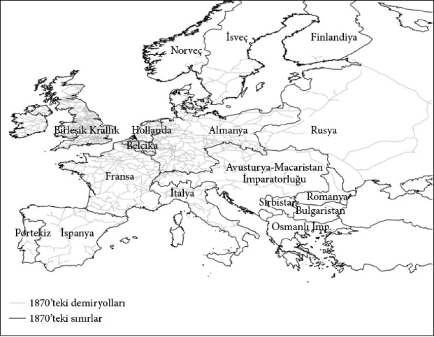
Harita 13: 1870’te Avrupa’da demiryolları.
Nakliye yasaktır
Mutlakıyetçilik Avrupa’nın büyük bölümünde olduğu kadar Asya’da da hüküm sürdü ve benzer biçimde Sanayi Devrimi’nin yarattığı kritik dönemeçte sanayileşmeyi engelledi. Çin’in Ming ve Qing hanedanlıklarında ve Osmanlı İmparatorluğu’nun mutlakıyetçiliğinde bu kalıbı görebiliriz. Çin 960-1279 yılları arasındaki Song hanedanlığı devrinde dünyayı pek çok teknolojik yenilikle tanıştırdı. Çinliler saatleri, pusulayı, barutu, kâğıdı ve kâğıt parayı, porseleni ve demir döküm için maden eritme ocağını Avrupa’dan önce icat etmişlerdi. Çıkrığı ve su gücünü Avrasya’nın öbür ucunda ortaya çıktıkları tarihlerle aşağı yukarı aynı tarihlerde ve onlardan bağımsız olarak geliştirmişlerdi. Bunun sonucunda 1500’de Çin’deki yaşam standartları en az Avrupa düzeyindeydi. Ayrıca Çin yüzyıllar boyunca kamu hizmetlilerinin meritokratik bir anlayışla istihdam edildiği merkezi bir devlete sahipti.
Yine de Çin mutlakıyetçiydi ve Song hanedanı dönemindeki büyüme sömürücü kurumlara dayalı bir büyümeydi. Monarşi dışındaki grupların siyasal temsili söz konusu değildi; parlamentoya ya da Cortes’e benzer bir şey de yoktu. Tüccarlar Çin’de daima rizikolu bir statüdeydi, Song devrinin büyük icatlarının arkasındaki itici güç pazar teşvikleri değildi, bunlar devlet himayesiyle, hatta emriyle, meydana getirilmişti. Çok azı ticari kullanıma sokulmuştu. Songların ardından gelen Ming ve Qing hanedanlıkları devrinde devlet kontrolü daha da sıkılaştı. Tüm bunların kökeninde sömürücü kurumların her zamanki mantığı yatıyordu. Sömürücü kurumları yöneten pek çok hükümdar gibi Çin imparatorları da değişime karşı çıktılar, istikrar istediler ve esas itibarıyla yaratıcı yıkımdan korktular.
Bu durumu en iyi ortaya koyan uluslararası ticaret tarihidir. Daha önce gördüğümüz gibi, Amerika’nın keşfi ve uluslararası ticaretin örgütleniş biçimi modern Avrupa’nın erken dönemlerindeki siyasal çatışmalarda ve kurumsal değişimlerde anahtar bir rol oynuyordu. Çin’de tüccarlar ekseriya iç ticaretle uğraşırken dış ticaret devlet tekelindeydi. Ming hanedanı 1368’de iktidara geldiğinde 30 yıl hüküm süren ilk hükümdar İmparator Hongwu’ydu. Hongwu denizaşırı ticaretin siyasal ve sosyal açıdan istikrarsızlık getireceğinden endişe ediyordu ve bu yüzden uluslararası alışverişe ancak hükümet tarafından düzenlenmesi ve ticari faaliyetle değil alınacak vergilerle ilgi olması kaydıyla izin verdi. Hatta Hongwu vergi toplama görevini ticari girişime çevirme suçlamasıyla yüzlerce insanı idam ettirdi. 1377 ile 1397 yılları arasında hiçbir okyanus aşırı ticaret misyonuna izin verilmedi. Özel şahısları yabancılarla ticaret yapmaktan men ettiği gibi Çinlilerin denizaşırı seyahatlerine de yasak getirdi.
1402’de İmparator Yongle tahta çıktı ve hükümet destekli dış ticareti daha büyük bir ölçekte yeniden hayata geçirerek Çin tarihinin en meşhur dönemlerinden birini başlattı. Yongle Amiral Zheng He’yi Güneybatı ve Güney Asya’da, Arabistan’da ve Afrika’da gerçekleştirilecek altı muazzam misyon için destekledi. Çinliler bu yerleri uzun ticari geçmişlerinden biliyorlardı fakat hiçbir zaman bu ölçekte bir şey gerçekleştirmemişlerdi. İlk filo 27.800 kişiden, biri içme suyu diğerleri erzak ve asker taşıyan 62 büyük hazine gemisinden ve onlara eşlik eden 190 küçük gemiden oluşuyordu. Gerçi İmparator Yongle 1422’deki altıncı seferden sonra bu misyonları geçici olarak durdurdu fakat 1424’ten 1425’e kadar hüküm süren halefi Hongxi bu faaliyetleri kalıcı hale getirdi. Hongxi’nin zamansız ölümüyle taht İmparator Xuande’ye kaldı. Xuande önce 1433’te Zheng He’ye son bir misyon için izin verdi. Fakat daha sonra tüm denizaşırı ticaret yasaklandı. 1436’da açık deniz gemilerinin inşası dahi yasaklandı. Denizaşırı ticaret üzerindeki yasak 1567’ye kadar kaldırılmadı.
Bu hadiseler, pek çok ekonomik faaliyeti engellediği için istikrarsızlığa yol açabilecek sömürü buzdağının yalnızca görünen kısmını oluşturuyordu fakat Çin’in ekonomik gelişimi üzerindeki etkileri çok büyük olacaktı. Tam da uluslararası ticaretin ve Amerika’nın keşfinin İngiltere’nin kurumlarını köklü bir dönüşüme uğrattığı bir dönemde Çin kendisini bu kritik dönemeçten kopardı ve içine kapandı. Bu içe kapanma 1567’de sona ermedi. Qing hanedanını kuran İç Asya’nın Mançuları Jurchenler 1644’te Ming hanedanlığına üstün geldiler. Ardından yoğun bir siyasal istikrarsızlık dönemi başladı. Qingler mal mülk demeden her şeye el koymaya giriştiler. Emekli bir Çinli âlim ve başarısız bir tüccar olan T’ang Chen 1690’larda şunları yazıyordu:
Ch’ing [Qing] hanedanı kurulalı elli seneden fazla oldu, gel gör ki imparatorluk her geçen gün daha da fakirleşiyor. Çiftçi perişan, zanaatkâr perişan, tüccar perişan; memur bile perişan. Tahıl ucuz, lakin kimseyi doyurmaz. Giyecek ucuz, lakin kimseyi korumaz. Gemiler dolusu mal bir pazaryerinden diğerine gider; fakat yok pahasına satılır. Görevlerinden ayrılan memurlar evlerini geçindirecek paralarının olmadığını fark eder. Hakikaten, dört zümrenin dördünü de fakirleştirdiler.
1661’de imparator Kangxi Vietnam’dan Chekiang’a kadar tüm sahil şeridi –özellikle de zamanında Çin’in ticari bakımdan en faal bölgesi olan tüm güney sahili– sakinlerinin 17 mil içeriye taşınmasını emretti. Kararın uygulanması için askerler sahilde devriye gezdi ve 1693’e kadar sahil bölgesine nakliye yasaklandı. Bu yasak 18. yüzyıl boyunca periyodik olarak yeniden uygulamaya konuldu ve Çin’in denizaşırı ticaretinin gelişimini büyük ölçüde engelledi. Bazı ilerlemeler olmadı değil; fakat imparatorun ansızın fikir değiştirip ticareti yasaklayabileceği ve böylece hem gemilere ve donanıma yapılan yatırımın hem de ticari ilişkilerin değersiz hale geleceği bir ortamda çok az kişi yatırım yapmaya istekliydi.
Ming ve Qing hükümetlerinin uluslararası ticarete karşı çıkmalarının ardındaki sebeplere artık aşinayız: Yaratıcı yıkım korkusu. Liderlerin asıl hedefi siyasal istikrardı. Uluslararası ticaret Atlantik ticaretinin genişlediği dönemde İngiltere’de olduğu gibi tüccarları zenginleştirip yüreklendirdiği için istikrarsızlığa yol açma potansiyeli taşıyordu. Bu yalnızca Ming ve Qing hanedanlıklarının görüşü değildi, Song hanedanlığının hükümdarlarının yaklaşımı da bu yöndeydi. Teknolojik yenilikleri desteklemeye istekli olmalarına ve daha büyük bir ticari özgürlük tanımalarına rağmen bunlar ancak kendi kontrollerinde olmak kaydıyla mümkündü. Ming ve Qing hanedanlıkları devrinde devletin ekonomik faaliyet üzerindeki kontrolü daha da arttığı ve denizaşırı ticaret yasaklandığı için durum daha da kötüleşti. Ming ve Qing Çin’inde piyasalar ve ticaret elbette vardı ve hükümet iç ekonomiye oldukça hafif bir vergi uyguluyordu. Ne var ki yeniliğe çok az destek sağlıyor ve siyasal istikrarı ticari ve sınai zenginliğin gelişimine yeğliyordu. Ekonomi üzerindeki tüm bu mutlakıyetçi kontrolün sonucunu tahmin etmek zor değil. Diğer ekonomiler sanayileşirken Çin ekonomisi tüm 19. yüzyıl boyunca ve 20. yüzyılın başlarında durgundu. Mao 1949’da komünist rejimi kurduğunda Çin dünyanın en yoksul ülkelerinden biri durumuna gelmişti.
Rahip Johannes’un mutlakıyetçiliği
Bir siyasal kurumlar bütünü olarak mutlakıyetçilik ve onun yol açtığı ekonomik sonuçlar Avrupa ve Asya’yla sınırlı değildi. 2. bölümde gördüğümüz Kongo Krallığı örneğinde olduğu gibi Afrika’da da kendini göstermişti. Afrika mutlakıyetçiliğinin daha da uzun ömürlü örneği ise köklerine 6. bölümde Aksum’un gerilemesinin ardından feodalizmin ortaya çıkışını tartışırken rastladığımız Etiyopya ya da Habeşistan’dır. Hatta Habeşistan mutlakıyetçiliği çok daha farklı meydan okumalar ve kritik dönemeçlerle yüzleştiği için Avrupalı emsallerinden bile daha uzun ömürlü olmuştur.
Aksum Kralı Ezana’nın Hıristiyanlığı kabul edişinin ardından Etiyopyalılar da Hıristiyan oldular ve 14. yüzyıldan itibaren Rahip Johannes mitinin odağı haline geldiler. Rahip Johannes Ortadoğu’da İslam’ın yükselişiyle Avrupa’yla bağlantısı kesilmiş bir Hıristiyan kralıydı. Başlangıçta krallığının Hindistan’da olduğu sanılıyordu. Ne var ki Avrupa’nın Hindistan konusundaki bilgisi arttıkça bunun doğru olmadığı anlaşıldı. Ardından Etiyopya Kralı –Hıristiyan olduğu için– bu mitin doğal hedefi haline geldi. Aslına bakılırsa Etiyopya kralları 1300’den itibaren Avrupa’ya diplomatik temsilciler yollayarak Arap istilalarına karşı Avrupa monarşileriyle ittifak kurabilmek için büyük çaba göstermiş ve hatta Portekiz Kralı’nı asker yollamaya bile ikna etmişlerdi.
Bu askerler, ayrıca diplomatlar, Cizvitler ve Rahip Johannes’la tanışmak isteyen seyyahlar, geride Etiyopya ilgili pek çok yazılı eser bıraktılar. İktisadi bir bakış açısıyla ele alındığında bunların en ilginç olanlarından bazıları bir Portekiz diplomatik misyonuna eşlik ederek 1520’den 1527’ye kadar Etiyopya’da kalan bir şapel papazına, Francisco Álvares’e aitti. Buna ilaveten 1624’ten itibaren Etiyopya’da yaşayan Cizvit Manoel de Almeida’nın ve 1768 ile 1773 yılları arasında ülkede bulunan seyyah John Bruce’un beyanları da vardı. Bu insanların yazdıkları o zamanın Etiyopyası’nın siyasal ve ekonomik kurumlarının kapsamlı bir tarifini yaparken Etiyopya’nın mutlakıyetçiliğin mükemmel bir örneği olduğu konusunda hiçbir şüpheye yer bırakmıyor. Etiyopya’da çoğulcu kurumlardan eser olmadığı gibi, hâkimiyetini efsanevi Kral Süleyman ve Saba Melikesi Belkıs’ın soyundan geldiği varsayımına dayandıran imparatorun gücü üzerinde herhangi bir denetim ya da kısıtlama da yoktu.
Mutlakıyetçiliğin neticesi, imparatorun siyasal stratejisi gereği mülkiyet hakları konusunda hiçbir güvencenin olmayışıydı. Örneğin Bruce şöyle diyordu:
Tüm arazi kralındı, kimden memnun kalırsa ona verir ve ne zaman isterse geri alırdı. Kral öldüğünde krallığın tüm arazisi yine tahta kalırdı; bu kadarla da bitmezdi, arazinin hâlihazırdaki sahibi öldüğü zaman da, ne kadar süredir onun olursa olsun, mülkü en büyük oğluna değil yine krala kalırdı.
Álvares, “büyük adamlar halka fena muamele etmeselerdi” mahsulün ve ekilebilir arazinin çok daha fazla olacağını iddia ediyordu. Almeida’nın toplumun nasıl bir düzene sahip olduğu konusundaki açıklamaları da bununla tutarlıdır. Almeida’nın gözlemlerine göre:
İmparator için her iki üç yılda bir, bazen her yıl, insanların arazilerini değiştirmesi, takas etmesi ya da geri alması sıradan bir durumdu. Hatta bunun yıl içinde birçok kez gerçekleşmesi bile şaşırtıcı değildi. Genellikle bir adam toprağı sürer, diğeri eker, bir başkası da biçerdi. Bu yüzden kimse araziyle onun istediği gibi ilgilenmezdi, hatta kimse bir ağaç dahi dikmezdi; çünkü bilirdi ki ağacı dikenin meyvesini de topladığı pek nadir görülen bir durumdu. Oysa krala göre kendisine bu denli bağımlı olmaları gayet işe yarar bir şeydi.
Bu tasvirler Etiyopya ve Avrupa mutlakıyetçiliğinin siyasal ve ekonomik yapıları arasında büyük benzerlikler olduğunu gösteriyor; fakat aynı zamanda Etiyopya’da mutlakıyetçiliğin daha yoğun ve ekonomik kurumların daha da sömürücü nitelikte olduğuna da açıklık getiriyor. Dahası, 6. bölümde vurguladığımız gibi, Etiyopya İngiltere’nin mutlakıyetçi rejimin zayıflamasını kolaylaştıran kritik dönemeçlere de maruz kalmadı. Modern dünyayı şekillendiren pek çok sürecin dışında kaldı. Böyle olmasaydı dahi Etiyopya’daki mutlakıyeçiliğinin yoğunluğu, muhtemelen bu mutlakıyetçiliğin daha da güçlenmesine yol açacaktı. Örneğin, Etiyopya’nın uluslararası ticareti de, kârlı köle ticareti dahil, İspanya’da olduğu gibi monarşinin kontrolündeydi. Etiyopya dış dünyadan tamamen yalıtılmış da değildi: Avrupalılar Rahip Johannes’u ararken Etiyopya da etrafını kuşatan İslam devletleriyle savaşmak zorunda kalmıştı. Her şeye rağmen, tarihçi Edward Gibbon’ın büyük bir doğrulukla belirttiği gibi, “Dört bir yandan din düşmanlarıyla kuşatılmış Etiyopyalılar onları unutmuş dünyadan bihaber neredeyse bin yıllık bir uykuya daldılar.”
19. yüzyılda Afrika’da Avrupa sömürgeciliği başladığında Etiyopya İmparator II. Tevodros unvanıyla 1855’te taç giydirilen Ras (Dük) Kassa’nın idare ettiği bağımsız bir krallıktı. Tevodros bir devlet modernizasyonuna girişti ve bu sayede daha merkezi bir bürokrasi ve yargı sisteminin yanı sıra ülkeyi kontrol altına alacak, belki de Avrupalılarla savaşabilecek güçte bir ordu oluşturdu. Her eyalete, görevleri vergi toplamak ve bu vergileri kendisine göndermek olan askeri valiler atadı. Avrupalı güçlerle görüşmelerde sıkıntı yaşıyordu ve bir öfke anında İngiliz elçiyi hapse atmıştı. 1868’de İngilizler gönderdikleri kuvvetle tüm sermayesini yağmalayınca da intihar etti.
Gelgelelim, Tevodros’un yeniden yapılandırdığı hükümet İtalyanlar karşısında 19. yüzyılın en büyük sömürgecilik karşıtı zaferlerinden birine imza atmayı başarmıştı. 1889’da taht II. Menelik’e geçti. Menelik tahta geçer geçmez İtalyanların bu bölgede bir sömürge kurma isteğiyle yüz yüze geldi. 1885’te Almanya Şansölyesi Bismarck, Berlin’de Avrupalı güçlerin gizlice “Afrika Yarışı”nı planladıkları, yani Afrika’nın farklı çıkar grupları arasında nasıl bölüşüleceğini kararlaştırdıkları bir konferans düzenledi. İtalya konferansta hem Etiyopya sahili boyunca uzanan Eritre’deki hem de Somali’deki sömürgelerinin haklarını güvence altına aldı. Etiyopya konferansta temsil edilmemesine karşın her nasılsa zarar görmemeyi başardı. Ancak İtalyanlar planlarından vazgeçmemişlerdi ve 1896’da bir orduyu Eritre’nin güneyinden harekete geçirdiler. Menelik’in yanıtı Avrupalı bir ortaçağ kralının vereceği türdendi; soylulara silahlı adamlarını getirterek bir ordu kurdu. Bu yaklaşım bir orduyu uzun süre cephede tutamazdı fakat muazzam bir orduyu kısa süreliğine bir araya getirebilirdi. Bu kısa süre, 1896’da Adowa Savaşı’nda 15 bin kişilik orduları Menelik’in 100 bin kişilik ordusu tarafından ezilen İtalyanları bozguna uğratmak için yeterliydi. Bu, sömürgecilik dönemi öncesinde bir Afrika ülkesinin Avrupalı bir gücü uğrattığı en büyük yenilgiydi ve Etiyopya’nın 40 yıl daha bağımsızlığını korumasını sağladı.
Etiyopya’nın son imparatoru, Ras Tafari, 1930’da Haile Selassie adıyla tahta çıktı. Haile Selassie 1935’te başlayan ikinci İtalyan işgaliyle tahttan indirilinceye dek hüküm sürdü. 1941’de İngilizlerin yardımıyla sürgünden geri döndü. Ardından 1974’te ülkeyi daha büyük bir fakirliğe ve tahribata sürükleyecek bir grup Marksist subaydan oluşan Derg, yani “Komite” tarafından devrilinceye dek hüküm sürmeye devam etti. Mutlakıyetçi Etiyopya imparatorluğunun gult gibi temel sömürücü ekonomik kurumları ve Aksum’un gerilemesiyle ortaya çıkan feodalizm, 1974 devrimiyle kaldırılıncaya dek varlığını korudu.
Etiyopya bugün dünyanın en yoksul ülkelerinden biri. Sıradan bir Etiyopyalı’nın geliri, sıradan bir İngiliz yurttaşınınkinin yaklaşık kırkta biri. İnsanların çoğu kırsal kesimde yaşıyor ve geçimlik tarımla uğraşıyor. Temiz sudan ve elektrikten, düzgün okullardan ya da sağlık hizmetlerinden yoksunlar. Ortalama yaşam süresi yaklaşık 55 yıl ve yetişkinlerin yalnızca üçte biri okuryazar. İngiltere ile Etiyopya arasında yapılacak bir karşılaştırma dünya eşitsizliğini sergileyecektir. Etiyopya’nın bugünkü konumunda olmasının nedeni, İngiltere’nin aksine Etiyopya’da mutlakıyetçiliğin yakın geçmişe dek varlığını sürdürmüş olmasıdır. Mutlakıyetçilik Etiyopyalıların büyük çoğunluğuna yoksulluk getiren –öte yandan elbette imparatorlara ve soylulara büyük menfaat sağlayan– sömürücü ekonomik kurumları da beraberinde getirmişti. Fakat mutlakıyetçiliğin en önemli sonucu Etiyopya toplumunun 19. yüzyılda ve 20. yüzyılın başlarında sanayileşmenin yarattığı fırsatlardan yararlanmayı başaramayarak bugün yurttaşlarının yaşadığı sefalete zemin hazırlamasıydı.
Samaale’nin çocukları
Dünyanın dört bir yanındaki mutlakıyetçi siyasal kurumlar, ister ekonomiyi örgütleyiş biçimleriyle dolaylı yoldan, ister Avusturya-Macaristan ve Rusya’da gördüğümüz gibi doğrudan, sanayileşmeye engel oldular. Fakat mutlakıyetçilik kapsayıcı ekonomik kurumların gelişiminin önündeki tek engel değildi. 19. yüzyılın şafağında dünyanın pek çok bölgesi, özellikle de Afrika’dakiler, asgari ölçüde dahi olsa yasa ve düzen sağlayacak bir devletten yoksundular ki bu modern bir ekonominin önkoşuluydu. Siyasal merkezileşme sürecini başlatıp ardından Rus mutlakıyetçiliğini kuran I. Petro’nun bir muadili yoktu Afrika’da; hele parlamentoyu ya da güçlerine yönelik diğer kısıtlamaları tamamen ortadan kaldırmadan –ya da daha doğrusu, kaldıramadan– devleti merkezileştiren Tudorların hiç. Afrika devletlerinin elitleri sanayileşmeye canı yürekten kucak açmış olsalardı bile belirli ölçüde bir siyasal merkeziyet olmaksızın yapabilecekleri pek de fazla bir şey olmazdı.
Afrika Boynuzu’ndaki Somali, siyasal merkeziyetten yoksun olmanın yıkıcı sonuçlarını gözler önüne serer. Somali tarihsel olarak altı klan ailesinin hâkimiyetindedir. Bunların en büyük dördünün; Dir, Darod, Isaq ve Hawiye’nin hepsi de kökenlerini mitik ataları Samaale’ye dayandırır. Bu klan aileleri Somali’nin kuzeyinde ortaya çıkmış ve zamanla güneye ve doğuya yayılmışlardır. Bugün bile esasen pastoral bir yaşam sürmekte, keçi, koyun ve deve sürüleriyle göç etmektedirler. Diğer iki klan ailesi, Digil ve Rahanweyn güneyde yerleşik bir hayat süren çiftçilerden oluşur. Bu klanlara ait bölgeler harita 12’de gösterilmiştir.
Somalililer öncelikle ait oldukları klan aileleriyle tanımlanırlar ancak bunlar çok geniştir ve pek çok alt grupları vardır. Bu alt grupların önde gelenleri, kökenlerini en büyük klan ailelerinden birine dayandıran klanlardır. Klan içi gruplaşmaların en dikkate değer olanları diyet-ödeyen gruplardır. Bunlar içlerinden birinin öldürülmesi halinde tazminat olarak diyet yani “kan parası” ödeyen ve toplayan yakın akrabalardan oluşur. Somali’deki klanlar ve diyet-ödeyen gruplar, başta su kaynakları ve hayvanlarını otlatmaya elverişli araziler olmak üzere kıt kaynaklar için tarih boyunca hemen hemen her zaman çatışma yaşamak zorundaydılar. Üstelik sürekli olarak komşu klanların ve diyet-ödeyen grupların sürülerine baskınlar düzenlediler. Her ne kadar klanların sultan denilen liderleri ve ayrıca ihtiyarları olsa da, bunlar gerçek anlamda bir güce sahip değildiler. Her yetişkin Somali erkeğinin klanı ya da grubu etkileyebilecek kararlara ilişkin söz söyleme hakkı olduğundan siyasal iktidar geniş bir kitleye dağıtılmıştı. Bu da tüm yetişkin erkeklerin oluşturduğu gayrı resmi bir meclisle sağlanmıştı. Yazılı bir yasa, polis ya da bahse değer bir hukuk sistemi yoktu, yalızca bir çerçeve vazifesi gören şeriat kanunu vardı ki örfi hukuk da onun içinde yerleşik haldeydi. Bir diyet-ödeyen grup için bu örfi hukuk, heer denilen ve bir grubun karşılıklı ilişkilerinde diğer gruplardan uymasını talep ettiği, açık bir şekilde formüle edilmiş yükümlülükler, haklar ve görevler bütününe kodlanmıştı. Sömürge idaresinin gelişiyle bu heer’ler yazılı hale getirilmeye başlandı. Örneğin Hassan Ugaas sülalesi yaklaşık 1500 erkekten mürekkep bir diyet-ödeyen grup oluşturuyordu ve İngiliz Somalisi’ndeki Dir klan ailesinin bir alt klanıydı. 8 Mart 1950’de heerleri İngiliz bölge komiseri tarafından kayda geçirildi. İlk üç madde şöyleydi:
1.Hassan Ugaas sülalesinin bir ferdi dışardan bir grup tarafından öldürüldüğünde en yakın akrabası kan parasından (yüz deve) yirmi deve alır, kalan seksen deve tüm Hassan Ugaaslara bölüştürülür.
2.Eğer Hassan Ugaaslardan bir adam dışardan biri tarafından yaralanır ve yaralarına otuz üç deveyle bir devenin üçte biri değer biçilirse kendisine on deve verilir ve kalan develer onun jiffo-grubuna (diyet grubunun bir alt grubu) verilir.
3.Hassan Ugaaslar arasında işlenen bir cinayet otuz üç deveyle bir devenin üçte biri tutarında tazminata tabidir ve ödeme yalnızca müteveffanın en yakın akrabasına yapılır. Fail ödemenin tümünü karşılayacak güce sahip değilse sülalesinden yardım alır.
Heer’in adam öldürme ve yaralama konusunun bu denli üstünde durması, diyet-ödeyen gruplarla klanlar arasında neredeyse daimi bir savaş durumunu yansıtıyor. Bu savaşın merkezindeyse kan parası ve kan davası yer alıyordu. Belirli birine karşı işlenen suç diyet-ödeyen grubun tümüne karşı işlenmiş sayılıyor ve kolektif bir tazminatı, yani kan parasını gerektiriyordu. Eğer bu kan parası ödenmezse suçu işleyen kişinin diyet-ödeyen grubu kolektif bir cezalandırmayla karşı karşıya kalıyordu. Modern taşımacılık Somali’ye ulaştığında kan parası araba kazalarında meydana gelen ölüm ve yaralanmaları da kapsar hale geldi. Hassan Ugaas’ın heer’i yalnızca cinayeti konu edinmiyordu; 6. madde şöyleydi: “Hassan Ugaaslardan biri Hassan Ugaas meclisinde bir diğerine hakaret ederse hakarete uğrayan tarafa 150 şilin verir.”
1955 başlarında iki klan, Habar Tol Ja’lo ve Habar Yuunis, Domberelly bölgesinde birbirlerinin yakınında hayvanlarını otlatıyorlardı. Yuunislerden bir adam deve gütme üzerine çıkan bir tartışmada Tol Ja’lolardan biri tarafından yaralandı. Yuunis klanı derhal Tol Ja’lo klanına saldırıp onlardan birini öldürerek derhal misilleme yaptı. Kan parası ilkesi uyarınca bu ölüm Yuunis klanının Tol Ja’lo klanına tazminat ödemeyi teklif etmesini gerektirdi ve bu teklif kabul edildi. Kan parası şahsen teslim edildi ve adet olduğu üzere deve cinsinden ödendi. Teslim töreninde Tol Ja’lo’lardan biri Yuunislerin bir üyesini katilin diyet-ödeyen grubundan biri zannedip öldürdü. İşte bu topyekûn bir savaşa neden oldu ve müteakip 48 saat içinde 13 Yuunis ve 26 Tol Ja’lo öldürüldü. Savaş İngiliz sömürge idaresinin klanların ihtiyarlarını bir araya getirerek iki tarafı da tatmin edecek bir anlaşmaya (karşılıklı kan parası ödemeye) önayak olmasına dek bir yıl daha devam etti.
Kan parasının ödenmesi, şiddet ve kan davası tehdidinin gölgesinde gerçekleşiyordu ve ödendiğinde bile mutlaka çatışmanın biteceği anlamına gelmiyordu. Genellikle çatışma zamanla azalıyor ve sonra tekrar alevleniyordu.
Böylelikle Somali toplumunda siyasal iktidar son derece, neredeyse çoğulcu denecek kadar dağıtılmış vaziyetteydi. Fakat bırakın mülkiyet haklarını, asayişi sağlayacak merkezi bir devlet otoritesi bile olmadığından bu durum kapsayıcı kurumlara yol açmadı. Kimse bir başkasının otoritesini tanımıyordu ve kimse, en sonunda çıkıp gelen İngiliz sömürge hükümeti de dahil, düzeni sağlayamadı. Siyasal merkeziyetten bütünüyle yoksun olması Somali için Sanayi Devrimi’nden faydalanmayı imkânsız hale getirmişti. Böylesi bir siyasal iklimde Sanayi Devrimi’nden saçılan yeni teknolojilere yatırım yapmak ya da bunları hayata geçirmek, hele bunları yapmak için gerekli örgütleri oluşturmak, tasavvur dahi edilemezdi.
Somali’nin karmaşık siyaseti ekonomik ilerleme konusunda daha da incelikli olası sonuçlar içeriyordu. Afrika tarihinin bazı büyük teknolojik muammalarından daha önce bahsetmiştik. Sömürgeciliğin geç 19. yüzyıldaki genişlemesinden önce Afrika toplumları tekerlekli taşımacılık yapmıyor ya da tarımda saban kullanmıyorlardı ve çok azı yazıya sahipti. Fakat gördüğümüz gibi Etiyopya öyle değildi. Somalililerin de yazılı bir alfabeleri vardı fakat Etiyopyalıların aksine onu kullanmıyorlardı. Bunun Afrika tarihindeki örneklerini gördük. Afrika toplumlarının tekerleği ya da sabanı olmayabilirdi fakat kesinlikle onlardan haberdarlardı. Kongo Krallığı örneğinde gördüğümüz gibi, bu durum temelde ekonomik kurumların insanlara bu teknolojileri hayata geçirmek için teşvik sunmamasından kaynaklanıyordu. Yazının hayata geçirilmesinde de aynı sorunlar ortaya çıkmış olabilir mi?
Somali’nin kuzeybatısında, güney Sudan’daki Nuba Dağları’nda bulunan ve tıpkı Somali gibi siyasal merkezileşme süreci geçirmemiş Taqali Krallığı’nu ele alarak bu duruma biraz açıklık getirebiliriz. Taqali Krallığı geç 18. yüzyılda İsmail adında bir adamın liderliğindeki bir grup savaşçı tarafından kuruldu ve 1884’te İngiliz İmparatorluğu’na dahil edilinceye dek bağımsızlığını korudu. Taqali kralları ve halkı Arapçayı yazı dili olarak kullanma olanağına sahiptiler fakat kullanmadılar. Yalnızca krallar başka devletlerle haberleşmede ve diplomatik yazışmalarda kullandı. İlk bakışta bu durum çok kafa karıştırıcı görünür. Yazının Mezopotamya’da ortaya çıkışına ilişkin yaygın kanı bilgiyi kayıt altına almak, halkı kontrol etmek ve vergi almak için yazıyı devletlerin geliştirdikleri yönündedir. Peki, Taqali devleti bunlarla ilgilenmiyor muydu?
Taqali devletinin tarihsel rekonstrüksiyonu üzerinde çalışan tarihçi Janet Edward, 1970’lerin sonlarında bu sorulara yanıt aradı. Meselenin bir boyutu şuydu; yurttaşlar devletin hak talep etmesine olanak sağlayarak kaynakların –örneğin verimli toprakların– kontrolü için kullanılmasından korktuklarından yazının kullanımına direnç gösteriyorlardı. Ayrıca daha sistematik bir vergilendirmeye yol açacağından endişe ediyorlardı. İsmail’in başlattığı hanedanlık güçlü bir devlete dönüşmedi. İsteseydi bile, devlet yurttaşların itirazları karşısında bir irade gösterebilecek güçte değildi. Ancak daha başka, daha incelikli etkenler de vardı. Pek çok elit siyasal merkeziyete karşı çıktı, örneğin yurttaşlarla sözlü iletişimi yazılı olana tercih ettiler çünkü bu onların takdir gücünü azami düzeye çıkarıyordu. Yazılı kanunlar ya da kurallar geri alınamaz ya da inkâr edilemezdi ve değiştirilmeleri de çok zordu. İdari elitin tersine çevirmeyi isteyebileceği kıstaslar oluşturuyorlardı. Böylece Taquali’de ne yöneticiler ne de yönetilenler yazıyı kullanmaya başlamayı çıkarlarına uygun görmediler. Yönetilenler yönetenlerin onu nasıl kullanacağından endişe ederken, yönetenler de yazının olmayışını zaten biraz rizikolu iktidarları için faydalı görüyorlardı. Yazının hayata geçirilememesinin nedeni Taqali’nin siyasi atmosferiydi. Somalililerin Taqali Krallığı’ndakiler kadar sınırları belli elitleri olmasa da yazının ve diğer temel teknolojilerin hayata geçirilmesine aynı etkenlerin engel olduğunu söylemek gayet mantıklı olacaktır.
Somali örneği siyasal merkeziyetten yoksun olmanın ekonomik büyüme üzerindeki sonuçlarını göstermektedir. Tarihsel kaynaklar Somali’de merkeziyeti sağlamaya yönelik herhangi bir girişimden bahsetmiyor. Fakat bunun neden bu denli zor olduğu çok açık. Siyasal merkeziyet demek bazı klanların diğer klanların hâkimiyeti altına girmesi demekti. Fakat bu tür bir tahakkümü ve bu tahakküm nedeniyle güçlerinden vazgeçmeyi reddettiler. Ülkedeki askeri güç dengesi de bu tür merkezi kurumların oluşturulmasını güçleştirdi. Aslına bakılırsa, merkezi bir otorite tesis etme teşebbüsünde bulunacak her grup ya da klan muhtemelen yalnızca sert bir direnişle karşılaşmakla kalmayacak, mevcut gücünü ve ayrıcalıklarını da kaybedecekti. Siyasal merkeziyetten yoksun olması ve mülkiyet haklarına ilişkin en temel güvenceleri bile sağlayamaması, Somali toplumunun verimlilik-artıran teknolojilere yapılacak yatırımlar için hiçbir zaman teşvik üretememesine neden oldu. Sanayileşme süreci 19. yüzyılda ve 20. yüzyıl başlarında dünyanın diğer bölgelerinde tüm hızıyla sürerken Somalililer kan davalarıyla boğuştu ve ekonomik geri kamışlıkları daha da kök saldı.
Bitmeyen geri kalmışlık
19. yüzyıl ve sonrasında Sanayi Devrimi tüm dünya için dönüştürücü bir kritik dönemeç yarattı. Yurttaşlarının yeni teknolojilere yatırım yapmasına olanak sağlayıp teşvik eden toplumlar hızla büyüdüler. Fakat dünyanın dört bir yanındaki pek çok ülke bunu başaramadı; ya da açıkça bunu yapmamayı seçti. Sömürücü siyasal ve ekonomik kurumların kıskacındaki ülkeler bu tür teşvikler üretemediler. İspanya ve Etiyopya örnekleri, siyasal kurumlar üzerindeki mutlakıyetçi hâkimiyetin ve sömürücü ekonomik kurumların ekonomik teşvikleri 19. yüzyılın başlamasından çok önce yok ettiğini ortaya koyuyor. Netice diğer mutlakıyetçi rejimlerde, örneğin Avusturya-Macaristan, Rusya, Osmanlı İmparatorluğu ve Çin’de de aynıydı; üstelik bu örneklerde idareciler yaratıcı yıkımdan korktukları için ekonomik ilerlemeyi teşvik etme konusunu savsaklamakla kalmamış, ayrıca açıkça sanayinin yayılmasını ve sanayileşmeye yol açacak yeni teknolojilerin hayata geçirilmesini engellemek için adımlar atmışlardı.
Mutlakıyetçilik sömürücü siyasal kurumların tek şekli olmadığı gibi sanayileşmeyi engelleyen tek etken de değildir. Kapsayıcı siyasal ve ekonomik kurumlar devletin düzeni sağlayabilmesi, mülkiyet haklarını idame ettirmesi ve gerektiğinde kamu hizmetlerine yatırım yaparak ekonomik faaliyeti desteklemesi için belirli ölçüde bir siyasal merkeziyeti zorunlu kılar. Bugün dahi Afganistan, Haiti, Nepal ve Somali gibi pek çok ülke asgari ölçüde de olsa bir düzen sağlayamamıştır ve ekonomik teşvikleri neredeyse yok edilmiştir. Somali örneği sanayileşme sürecinin bazı toplumlar tarafından nasıl atlandığını da göstermektedir. Siyasal merkeziyete direnç gösterildi ve bunun sebebi mutlakıyetçiliğin değişime direnç göstermesiyle aynıydı; değişimin siyasal iktidarı bugünün hâkim konumdakilerinden alıp yeni kişi ve gruplara vereceği yönünde, genellikle de boşa çıkmayan korku. Böylece mutlakıyetçilik çoğulculuğa ve de ekonomik değişime yönelik hamleleri engellerken siyasal merkeziyetin olmadığı toplumların hâkim konumdaki geleneksel elitleri ve klanları da aynısını yaptı. Bunun sonucunda, 18. ve 19. yüzyıllarda bu tür bir merkeziyetten hâlâ yoksun olan toplumlar sanayi çağında bilhassa dezavantajlı konumdaydılar.
Mutlakıyetçilikten tutun da fazlaca merkeziyet sağlayamamış devletlere kadar çeşitli sömürücü kurumlar sanayinin yaygınlaşmasından fayda sağlamayı başaramazken Sanayi Devrimi’nin yarattığı kritik dönemecin dünyanın diğer bölgelerindeki etkileri çok farklıydı. 10. bölümde göreceğimiz gibi, Birleşik Devletler ve Avustralya gibi katılımcı siyasal ve ekonomik kurumlar için çoktan adım atmış ülkeler ve Fransa ile Japonya gibi mutlakıyetçiliğin daha ciddi bir meydan okumayla karşılaştığı ülkeler bu yeni ekonomik fırsatlardan faydalandılar ve hızlı bir ekonomik büyüme süreci başlattılar. Böylece, kritik dönemeç ile mevcut kurumsal farklılıklar arasındaki olağan etkileşim kalıbı 19. yüzyılda daha da ileri bir kurumsal ve ekonomik ayrıma neden oldu ve bu defa daha da büyük bir patlamayla, ülkelerin zenginlik ve yoksulluk üzerinde daha önemli etkilere yol açtı.
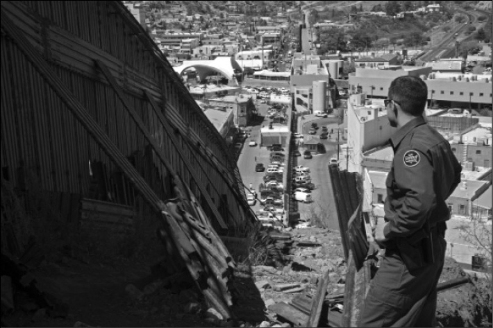
Sınırı belirleyen çitin kuzeyi: Nogales Arizona.
(Jim West/imagerbroker.net/Photolibrary)
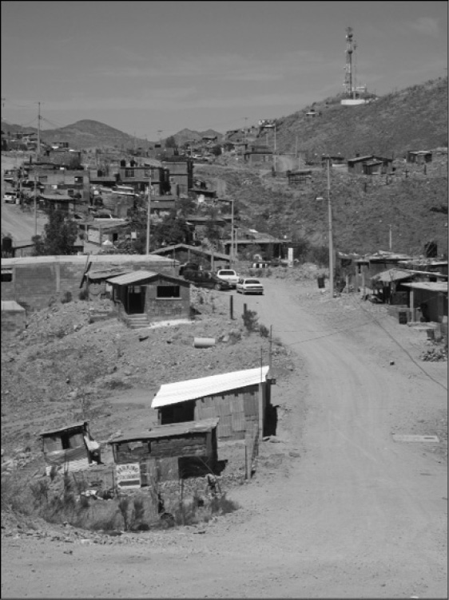
Sınırı belirleyen çitin güneyi: Nogales Sonora.
(Jim West/age fotostock/Photolibrary)
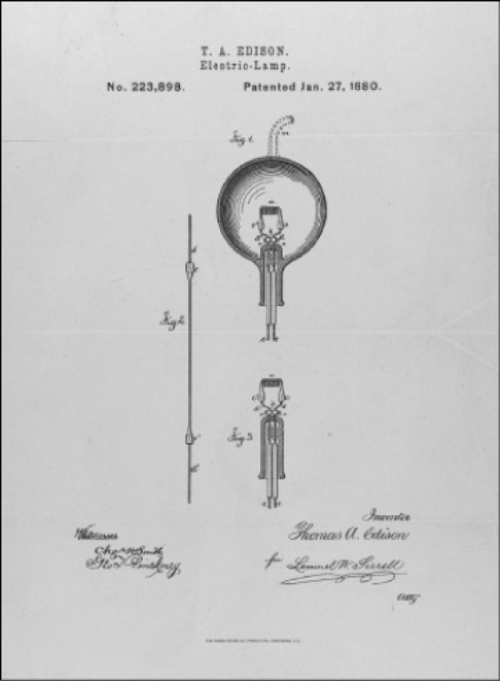
Eşit rekabet koşullarının sonuçları.
Thomas Edison’un 1880 yılındaki ampul için aldığı patent.
(Records of the Patent and Trademark Office; Record Group 241; National Archives)
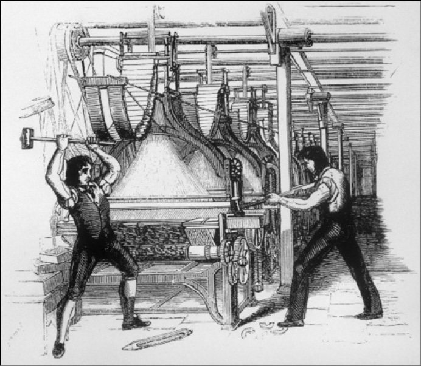
Yaratıcı yıkımın ekonomik alanda kaybedenleri: 19. yüzyıl İngiltere’sinde
makineleri tahrip eden Luddistler.
(Mary Evans Picture Library/Tom Morgan)
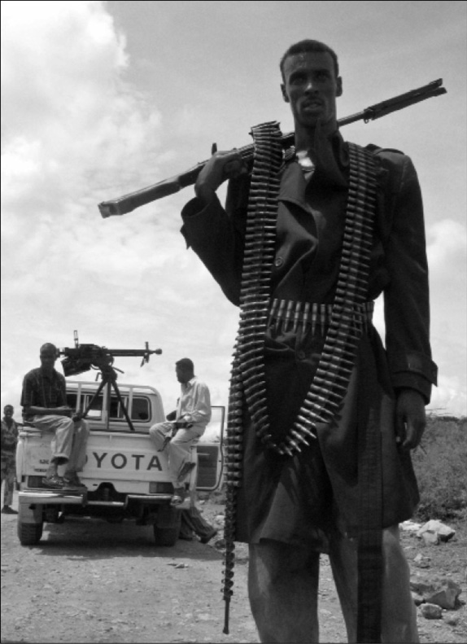
Siyasal merkeziyetten bütünüyle yoksun olmanın sonuçları, Somali.
(REUTERS/Mohamed Guled/Landov)
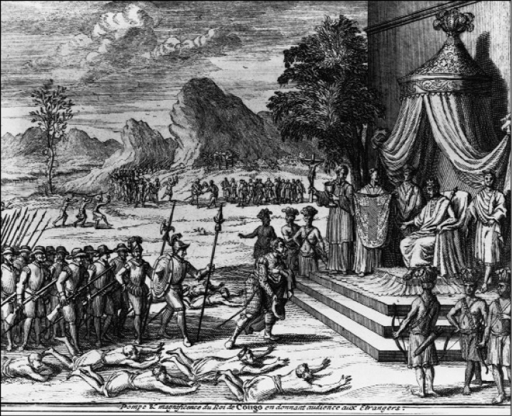
Kongo’da sömürücü kurumlardan birbiri ardına istifade edenler: Kongo Kralı.
(© CORBIS)
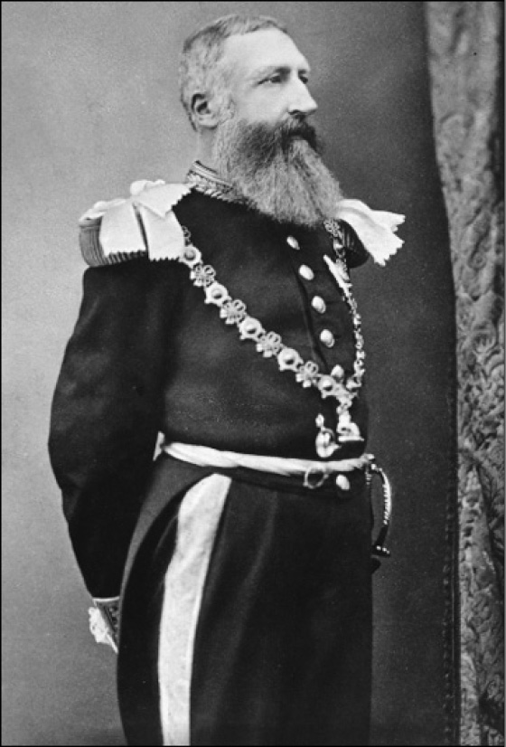
Kral II. Leopold
(The Granger Collection, NY)
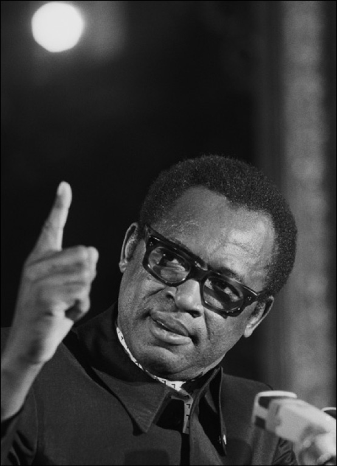
Joseph-Désiré Mobutu
(Richard Melloul/Sygma/CORBIS)
Laurent Kabila
(© Reuters/CORBIS)
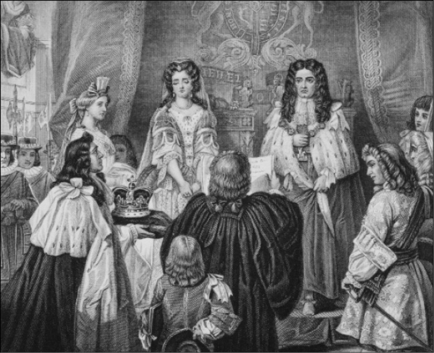
Görkemli Devrim: III. William’a parlamento tarafından İngiltere tacı takdim
edilmeden önce Haklar Bildirgesi okunuyor.
(After Edgar Melville Ward/The Bridgeman Art Library/Getty Images)
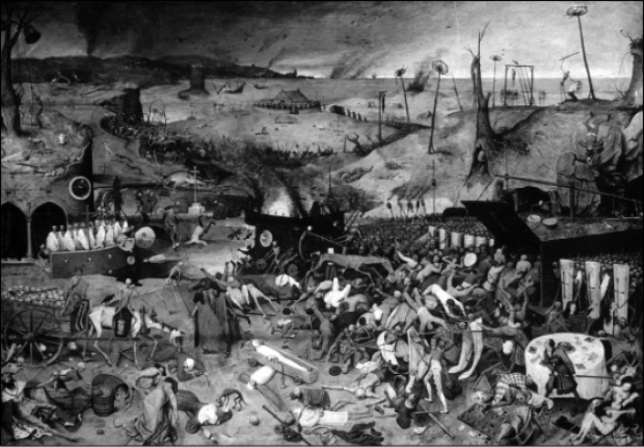
14. yüzyıldaki hıyarcıklı veba salgını kritik dönemeç yaratır
(Ölümün Zaferi, Yaşlı Brueghel’in Kara Ölüm’ü resmettiği tablo).
(The Granger Collection, NY)
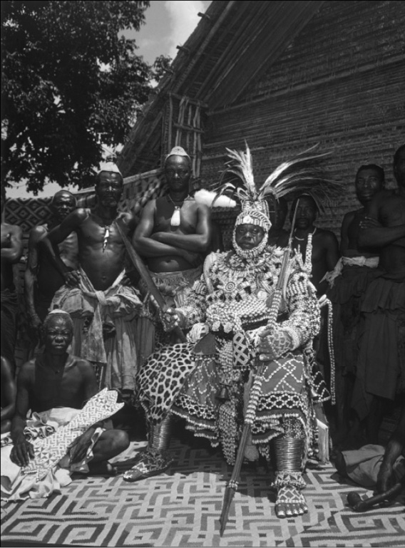
Kurumsal yeniliğin faydasını görenler: Kuba Kralı.
(Eliot Elisofon/Time & Life Pictures/Getty)
Tarım öncesinde, hiyerarşi ve eşitsizliğin ortaya çıkışı: Natufian elitlerinin mezar eşyaları.
(http://en.wikipedia.org/wiki/File:Natufian-Burial-ElWad.jpg)
{kind=link}
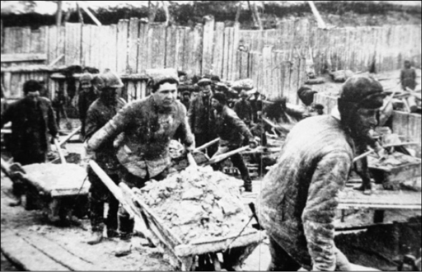
Sömürücü büyüme: Gulag kamplarının işçileri Baltık Denizi kanalını inşa ediyorlar.
(SOVFOTO)
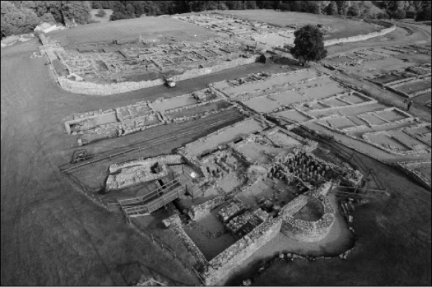
Britanya’nın geri kalışı: Vindolanda’da Roma İmparatorluğu harabeleri.
(Courtesy of the Vindolanda Trust and Adam Stanford)
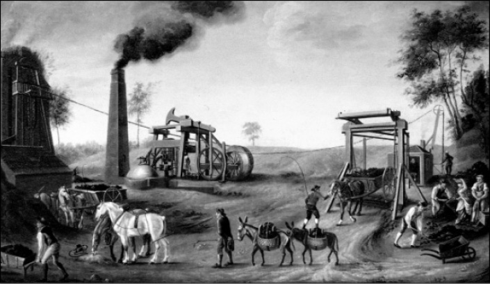
Kapsayıcı ekonomik büyümenin özü, yenilik: James Watt’un buhar makinesi.
(The Granger Collection, NY)
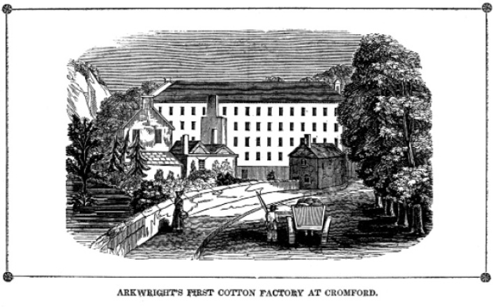
Kapsayıcı kurumların bir sonucu, örgütsel değişim:
Richard Arkwright’ın Cromford’daki fabrikası.
(The Granger Collection, NY)
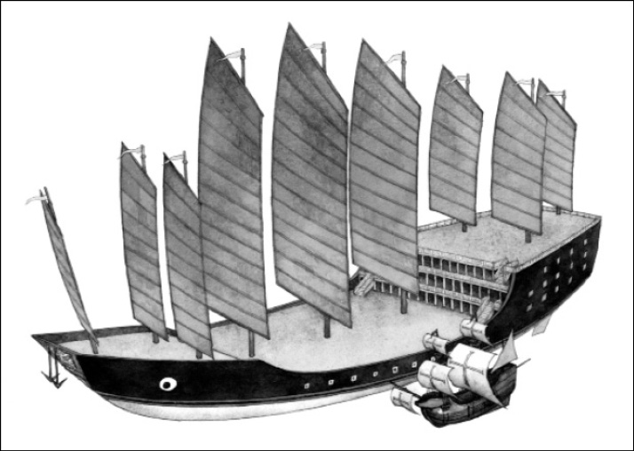
Sömürgeci ekonominin sürdürülemeyen büyümesinin meyveleri. Zheng He’nin
gemisi Kolomb’un Santa Maria’sının yanında.
(Gregory A. Harlin/National Geographic Stock)
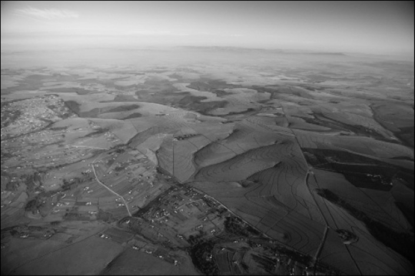
Güney Afrika’daki ikili ekonominin kuş bakışı görünümü: Transkei’de yoksulluk, Natal’da zenginlik.
(Roger de la Harpe/Africa Imagery)
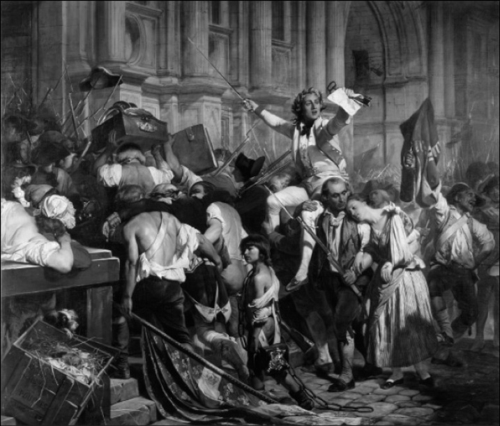
Sanayi Devrimi’nin sonuçları: Bastille Baskını.
(Bridgeman-Giraudon/Art Resource, NY)
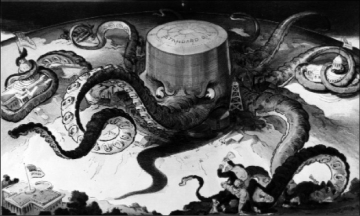
Kapsayıcı kurumların önündeki engeller: Standart Oil Company.
(Library of Congress Prints and Photographs Division Washington, D.C.)
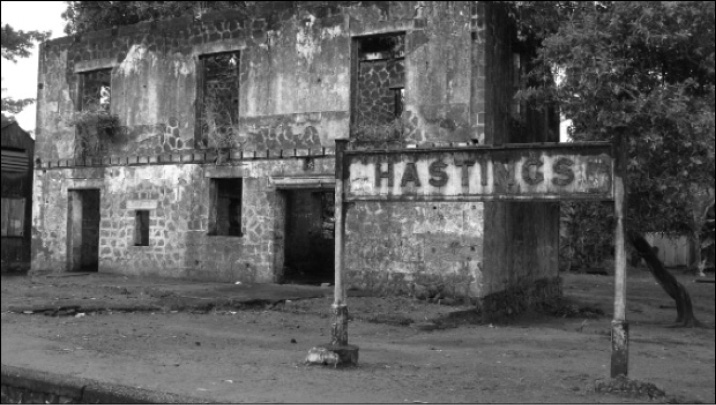
Yaratıcı olmayan yıkım: Sierra Leone’de Bo yolu üzerindeki terk edilmiş
Hasting demiryolu istasyonu.
(© Matt Stephenson: www.itsayshere.org)
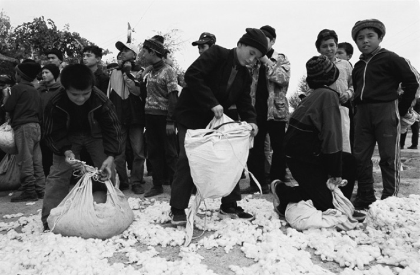
Günümüzde sömürücü kurumlar: Özbekistan’da pamuk tarlasında çalışan çocuklar.
(Environmental Justice Foundation, www.ejfoundation.org)
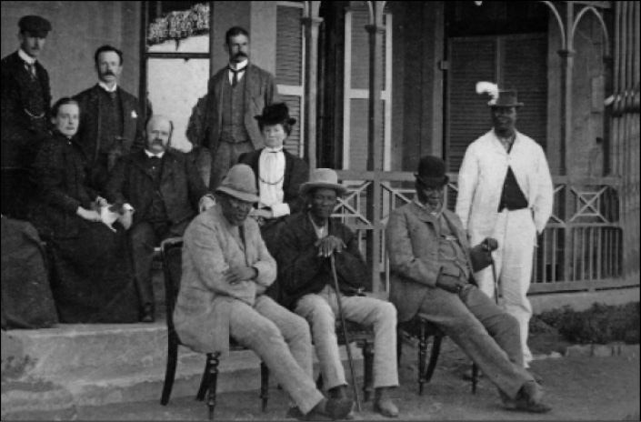
Çember kırılıyor: Üç Tsavana şefi Londra’ya giderken.
(Photography by Willoughby, courtesy of Botswana National Archives & Records Services)
Kırılan bir başka çember: Rosa Parks ABD’nin güneyindeki sömürücü kurumlara meydan okuyor.
(The Granger Collection, NY)
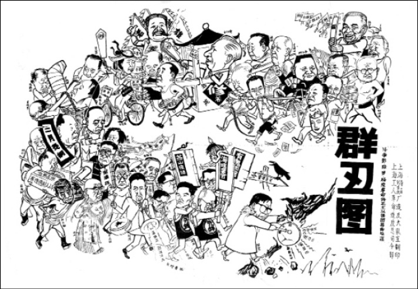
Sömürücü kurumlar çocuklarını öğütüyor: Çin Kültür Devrimi, “yozlaşmış entelektüellere” karşı.
(Weng Rulan, 1967, IISH Collection, International Institute of Social History [Amsterdam])
19. Donanmadaki filoların kendi aralarında bölünmeleriyle oluşturulan ufak filolar. (ç.n.)